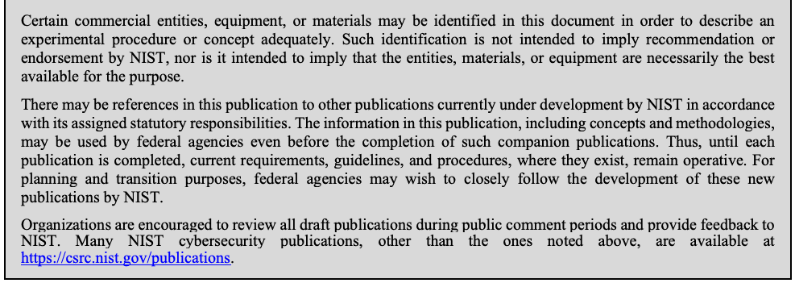
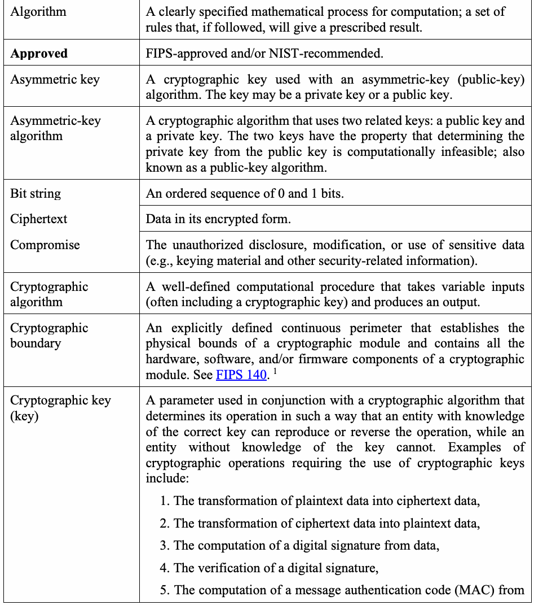
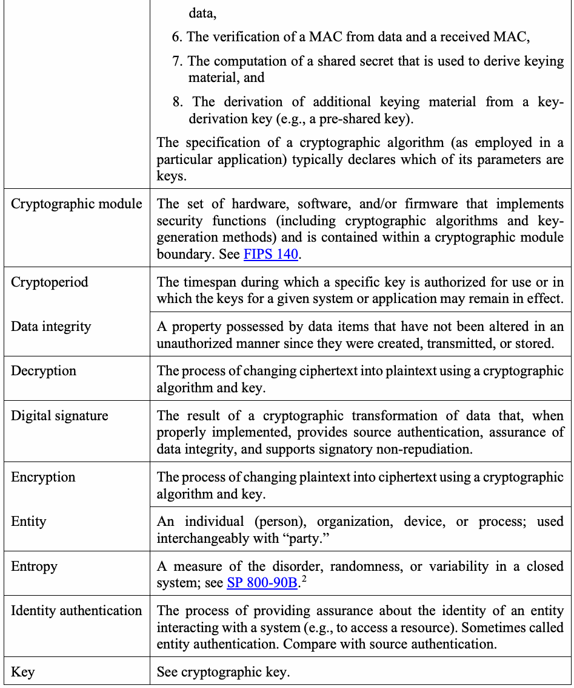
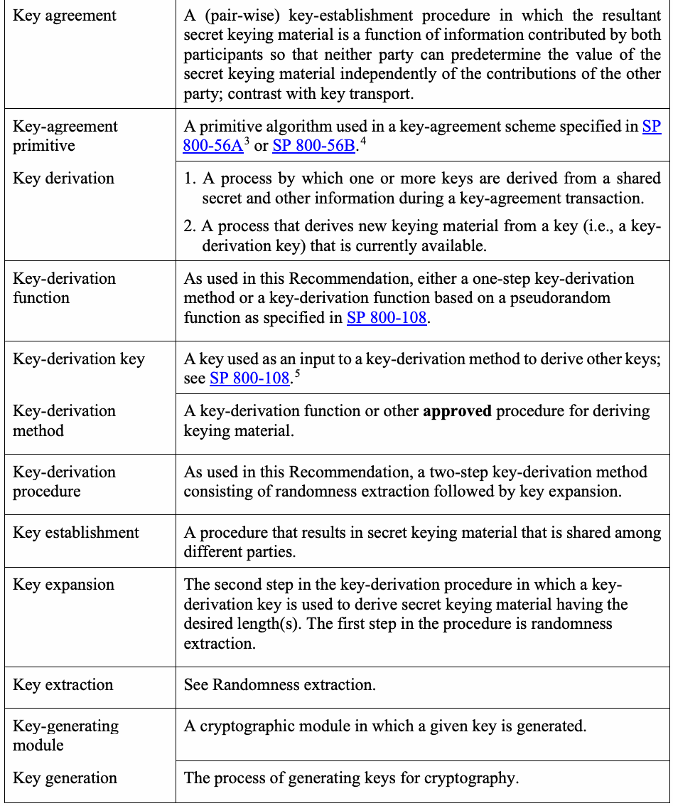
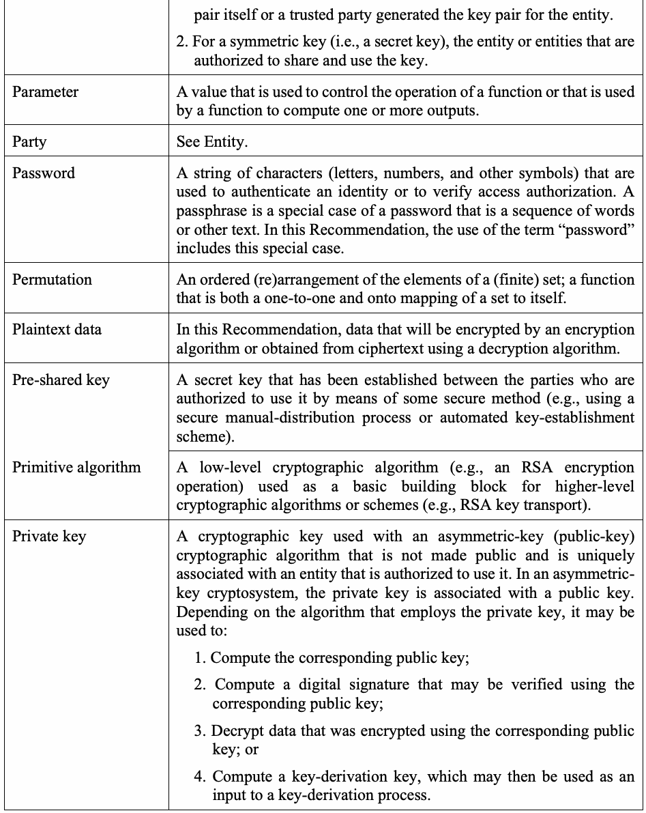
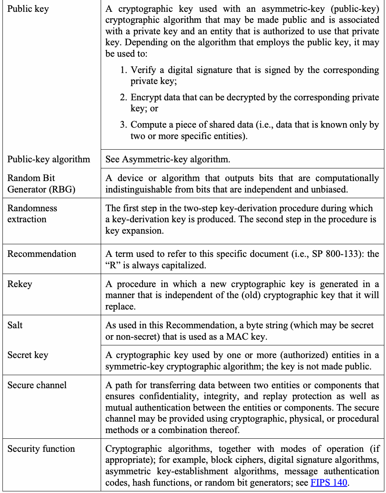
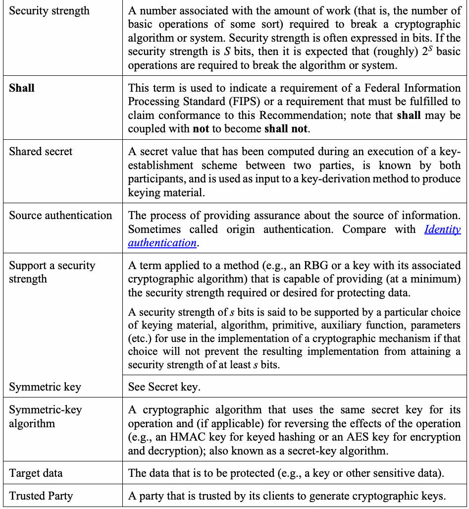
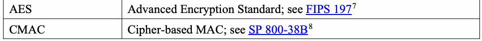
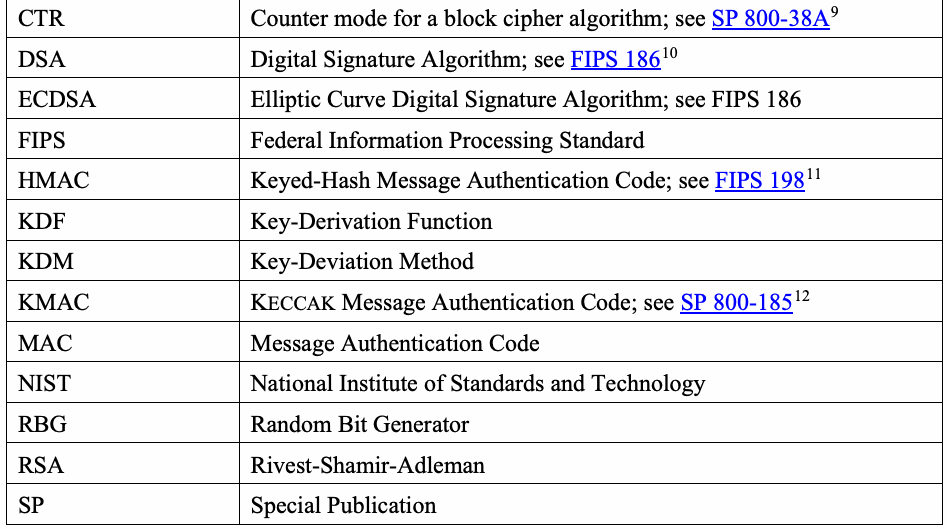

NIST Special Publication · PDF 原文抽出
Recommendation for Cryptographic Key Generation
暗号鍵生成に関する推奨事項
NIST SP 800-133 Rev. 2（Recommendation for Cryptographic Key Generation）の英文と日本語訳を段落ごとに並べた閲覧用ページです。承認された暗号アルゴリズムで使用・管理する鍵の生成方法について、対称鍵や公開鍵を含む推奨事項を示します。 翻訳は有志による非公式のもので、NIST および米国商務省が作成・承認・推奨したものではありません。要件の確認にはNIST の正式版 PDFを参照してください。
NIST Special Publication 800-133
NIST特別刊行物 800-133
Revision 2
改訂2
Recommendation for Cryptographic
暗号に関する推奨事項
Key Generation
鍵生成
Elaine Barker Allen Roginsky Richard Davis
Elaine Barker、Allen Roginsky、Richard Davis
This publication is available free of charge from: https://doi.org/10.6028/NIST.SP.800-133r2
本刊行物は次から無料で入手できる：https://doi.org/10.6028/NIST.SP.800-133r2
C O M P U T E R S E C U R I T Y
コ ン ピ ュ ー タ セ キ ュ リ テ ィ
NIST Special Publication 800-133
NIST特別刊行物 800-133
Revision 2
改訂2
Recommendation for Cryptographic
暗号に関する推奨事項
Key Generation
鍵生成
Elaine Barker Allen Roginsky
Elaine Barker、Allen Roginsky
Computer Security Division Information Technology Laboratory
コンピュータセキュリティ部門 情報技術研究所
Richard Davis
Richard Davis
National Security Agency
国家安全保障局
This publication is available free of charge from: https://doi.org/10.6028/NIST.SP.800-133r2
本刊行物は次から無料で入手できる：https://doi.org/10.6028/NIST.SP.800-133r2
June 2020
2020年6月
U.S. Department of Commerce Wilbur L. Ross, Jr., Secretary
米国商務省 Wilbur L. Ross, Jr. 長官
National Institute of Standards and Technology
国立標準技術研究所
Walter Copan, NIST Director and Under Secretary of Commerce for Standards and Technology
Walter Copan、NIST所長兼標準技術担当商務次官
Authority
権限
This publication has been developed by NIST in accordance with its statutory responsibilities under the Federal Information Security Modernization Act (FISMA) of 2014, 44 U.S.C. § 3551 et seq., Public Law (P.L.) 113-283. NIST is responsible for developing information security standards and guidelines, including minimum requirements for federal information systems, but such standards and guidelines shall not apply to national security systems without the express approval of appropriate federal officials exercising policy authority over such systems. This guideline is consistent with the requirements of the Office of Management and Budget (OMB) Circular A-130.
本刊行物は、2014年連邦情報セキュリティ近代化法（FISMA）、44 U.S.C. § 3551 et seq.、公法（P.L.）113-283に基づく法定責任に従ってNISTが策定した。NISTは、連邦情報システムの最低要件を含む情報セキュリティ標準およびガイドラインを策定する責任を負う。ただし、当該システムについて政策権限を行使する適切な連邦職員の明示的な承認がない限り、これらの標準およびガイドラインは国家安全保障システムには適用されない。本ガイドラインは行政管理予算局（OMB）通達A-130の要件に適合している。
Nothing in this publication should be taken to contradict the standards and guidelines made mandatory and binding on federal agencies by the Secretary of Commerce under statutory authority. Nor should these guidelines be interpreted as altering or superseding the existing authorities of the Secretary of Commerce, Director of the OMB, or any other federal official. This publication may be used by nongovernmental organizations on a voluntary basis and is not subject to copyright in the United States. Attribution would, however, be appreciated by NIST.
本刊行物のいかなる内容も、法定権限に基づき商務長官が連邦機関に義務付け、拘束力を持たせた標準およびガイドラインに反するものと解釈してはならない。また、本ガイドラインを、商務長官、OMB長官、その他の連邦職員が有する既存の権限を変更または置き換えるものと解釈してはならない。本刊行物は非政府組織が任意に利用でき、米国内では著作権の対象ではない。ただし、NISTへの帰属表示を歓迎する。
National Institute of Standards and Technology Special Publication 800-133 Revision 2 Natl. Inst. Stand. Technol. Spec. Publ. 800-133 Rev 2, 36 pages (June 2020) CODEN: NSPUE2
国立標準技術研究所 特別刊行物800-133 改訂2、Natl. Inst. Stand. Technol. Spec. Publ. 800-133 Rev 2、36ページ（2020年6月）CODEN: NSPUE2
This publication is available free of charge from: https://doi.org/10.6028/NIST.SP.800-133r2
本刊行物は次から無料で入手できる：https://doi.org/10.6028/NIST.SP.800-133r2
Certain commercial entities, equipment, or materials may be identified in this document in order to describe an experimental procedure or concept adequately. Such identification is not intended to imply recommendation or endorsement by NIST, nor is it intended to imply that the entities, materials, or equipment are necessarily the best available for the purpose. There may be references in this publication to other publications currently under development by NIST in accordance with its assigned statutory responsibilities. The information in this publication, including concepts and methodologies, may be used by federal agencies even before the completion of such companion publications. Thus, until each publication is completed, current requirements, guidelines, and procedures, where they exist, remain operative. For planning and transition purposes, federal agencies may wish to closely follow the development of these new publications by NIST. Organizations are encouraged to review all draft publications during public comment periods and provide feedback to NIST. Many NIST cybersecurity publications, other than the ones noted above, are available at https://csrc.nist.gov/publications.
原本PDFの抜粋画像

特定の商業団体、機器または材料を本書で特定することがあるが、それは実験手順または概念を十分に説明するためである。その特定は、NISTによる推奨または承認を意味するものではなく、また当該団体、材料または機器が目的に対して必ずしも入手可能な最良のものであることを意味するものでもない。本刊行物では、割り当てられた法定責任に従ってNISTが現在策定中の他の刊行物を参照する場合がある。これらの関連刊行物が完成する前でも、連邦機関は本刊行物の情報（概念や方法論を含む）を使用できる。したがって、各刊行物が完成するまでは、現行の要件、ガイドラインおよび手順が、存在する場合には、引き続き有効である。計画および移行のため、連邦機関はNISTによるこれらの新刊行物の策定状況を注意深く追跡するとよい。組織には公開コメント期間中にすべての草案刊行物を確認し、NISTに意見を提供することを推奨する。上記以外にも、多数のNISTサイバーセキュリティ刊行物を https://csrc.nist.gov/publications で入手できる。
Comments on this publication may be submitted to:
本刊行物へのコメントは次の宛先に提出できる：
National Institute of Standards and Technology Attn: Computer Security Division, Information Technology Laboratory 100 Bureau Drive (Mail Stop 8930) Gaithersburg, MD 20899-8930 Email: SP-800-133_Comments@nist.gov
国立標準技術研究所 宛先：情報技術研究所 コンピュータセキュリティ部門 100 Bureau Drive（Mail Stop 8930）Gaithersburg, MD 20899-8930 電子メール：SP-800-133_Comments@nist.gov
All comments are subject to release under the Freedom of Information Act (FOIA)
すべてのコメントは情報公開法（FOIA）に基づく公開の対象となる。
Reports on Computer Systems Technology
コンピュータシステム技術に関する報告書
The Information Technology Laboratory (ITL) at the National Institute of Standards and Technology (NIST) promotes the U.S. economy and public welfare by providing technical leadership for the Nation’s measurement and standards infrastructure. ITL develops tests, test methods, reference data, proof of concept implementations, and technical analyses to advance the development and productive use of information technology. ITL’s responsibilities include the development of management, administrative, technical, and physical standards and guidelines for the cost-effective security and privacy of other than national security-related information in Federal information systems. The Special Publication 800-series reports on ITL’s research, guidelines, and outreach efforts in information system security, and its collaborative activities with industry, government, and academic organizations.
国立標準技術研究所（NIST）の情報技術研究所（ITL）は、米国の計測・標準インフラに対する技術的リーダーシップを提供し、米国経済と公共の福祉を促進している。ITLは、情報技術の発展と有効活用を推進するため、試験、試験方法、参照データ、概念実証の実装、および技術分析を開発している。ITLは、連邦情報システムにおける国家安全保障関連以外の情報を費用対効果よく保護し、プライバシーを確保するための管理、運用、技術および物理的な標準とガイドラインの開発を担う。特別刊行物800シリーズは、情報システムセキュリティに関するITLの研究、ガイドライン、普及活動、および産業界、政府、学術機関との協働活動を報告する。
Abstract
要約
Cryptography is often used in an information technology security environment to protect data that is sensitive, has a high value, or is vulnerable to unauthorized disclosure or undetected modification during transmission or while in storage. Cryptography relies upon two basic components: an algorithm (or cryptographic methodology) and a cryptographic key. This Recommendation discusses the generation of the keys to be managed and used by the approved cryptographic algorithms.
暗号技術は、機密性が高い、価値が高い、または伝送中や保存中に不正開示もしくは検出されない改変を受けるおそれのあるデータを保護するため、情報技術セキュリティ環境でしばしば使用される。暗号技術は、アルゴリズム（または暗号方式）と暗号鍵という2つの基本要素に依存する。本推奨事項は、承認済み暗号アルゴリズムによって管理・使用される鍵の生成を扱う。
Keywords
キーワード
asymmetric key; key agreement; key derivation; key generation; key wrapping; key replacement; key transport; private key; public key; symmetric key.
非対称鍵；鍵合意；鍵導出；鍵生成；鍵ラッピング；鍵置換；鍵転送；秘密鍵；公開鍵；共通鍵。
Acknowledgements
謝辞
The National Institute of Standards and Technology (NIST) gratefully acknowledges and appreciates contributions by the public and private sectors whose thoughtful and constructive comments improved the quality and usefulness of this publication.
国立標準技術研究所（NIST）は、示唆に富む建設的なコメントによって本刊行物の質と有用性を向上させた官民各部門の貢献に深く感謝する。
Patent Disclosure Notice
特許開示に関する通知
NOTICE: The Information Technology Laboratory (ITL) has requested that holders of patent claims whose use may be required for compliance with the guidance or requirements of this publication disclose such patent claims to ITL. However, holders of patents are not obligated to respond to ITL calls for patents and ITL has not undertaken a patent search in order to identify which, if any, patents may apply to this publication.
通知：情報技術研究所（ITL）は、本刊行物の指針または要件への適合に使用が必要となる可能性のある特許請求の範囲を保有する者に対し、当該特許請求の範囲をITLに開示するよう求めている。ただし、特許保有者にはITLの特許照会に応答する義務はなく、ITLも本刊行物に適用される可能性のある特許を特定するための特許調査を実施していない。
As of the date of publication and following call(s) for the identification of patent claims whose use may be required for compliance with the guidance or requirements of this publication, no such patent claims have been identified to ITL.
刊行日時点で、本刊行物の指針または要件への適合に使用が必要となる可能性のある特許請求の範囲の特定を求めた後も、そのような特許請求の範囲はITLに報告されていない。
No representation is made or implied by ITL that licenses are not required to avoid patent infringement in the use of this publication.
本刊行物の使用において特許侵害を避けるためのライセンスが不要であると、ITLが表明または暗示するものではない。
Table of Contents
目次
1 Introduction — 1
1 はじめに — 1
2 Definitions, Acronyms and Symbols — 2
2 定義、頭字語および記号 — 2
2.1 Definitions — 2
2.1 定義 — 2
2.2 Acronyms — 8
2.2 頭字語 — 8
2.3 Symbols and Terms — 10
2.3 記号および用語 — 10
3 General Discussion — 11
3 一般的な説明 — 11
3.1 Keys to Be Generated — 11
3.1 生成対象の鍵 — 11
3.2 Where Keys are Generated — 11
3.2 鍵の生成場所 — 11
3.3 Supporting a Security Strength — 11
3.3 セキュリティ強度の支援 — 11
4 Using the Output of a Random Bit Generator — 13
4 ランダムビット生成器の出力の使用 — 13
5 Generation of Key Pairs for Asymmetric-Key Algorithms — 15
5 公開鍵アルゴリズム用鍵ペアの生成 — 15
5.1 Key Pairs for Digital Signature Schemes — 15
5.1 デジタル署名方式用鍵ペア — 15
5.2 Key Pairs for Key Establishment — 15
5.2 鍵確立用鍵ペア — 15
5.3 Distributing the Key Pairs — 16
5.3 鍵ペアの配布 — 16
5.4 Key Pair Replacement — 16
5.4 鍵ペアの置換 — 16
6 Generation of Keys for Symmetric-Key Algorithms — 18
6 共通鍵アルゴリズム用鍵の生成 — 18
6.1 The “Direct Generation” of Symmetric Keys — 18
6.1 共通鍵の「直接生成」— 18
6.2 Derivation of Symmetric Keys — 19
6.2 共通鍵の導出 — 19
6.2.1 Symmetric Keys Generated Using Key-Agreement Schemes — 20
6.2.1 鍵合意方式を使用して生成する共通鍵 — 20
6.2.2 Symmetric Keys Derived from a Pre-existing Key — 20
6.2.2 既存鍵から導出する共通鍵 — 20
6.2.3 Symmetric Keys Derived from Passwords — 21
6.2.3 パスワードから導出する共通鍵 — 21
6.3 Symmetric Keys Produced by Combining (Multiple) Keys and Other Data — 21
6.3 （複数の）鍵と他のデータを組み合わせて生成する共通鍵 — 21
6.4 Distributing Symmetric Keys — 23
6.4 共通鍵の配布 — 23
6.5 Replacement of Symmetric Keys — 23
6.5 共通鍵の置換 — 23
References — 25
参考文献 — 25
Appendix A: Revisions — 28
付録A：改訂 — 28
1 Introduction
1 はじめに
Cryptography is often used in an information technology security environment to protect data that is sensitive, has a high value, or is vulnerable to unauthorized disclosure or undetected modification during transmission, storage, or use. Cryptography relies upon two basic components: an algorithm (or cryptographic methodology) and, often, a cryptographic key. The algorithm is a mathematical process, and the key is a parameter used by that process. The National Institute of Standards and Technology (NIST) has developed a wide variety of Federal Information Processing Standards (FIPS) and NIST Special Publications (SPs) to specify and approve cryptographic algorithms for use by the Federal Government. In addition, guidance has been provided on the management of the cryptographic keys to be used with these approved cryptographic algorithms. This Recommendation (i.e., SP 800-133) discusses the generation of the keys to be used with the approved cryptographic algorithms. The keys are either 1) generated using mathematical processing on the output of approved Random Bit Generators (RBGs) and possibly other parameters or 2) generated based on keys that are generated in this fashion.
暗号技術は、機密性が高い、価値が高い、または伝送中、保存中、使用中に不正開示もしくは検出されない改変を受けるおそれのあるデータを保護するため、情報技術セキュリティ環境でしばしば使用される。暗号技術は、アルゴリズム（または暗号方式）と、しばしば暗号鍵という2つの基本要素に依存する。アルゴリズムは数学的処理であり、鍵はその処理で使用されるパラメータである。国立標準技術研究所（NIST）は、連邦政府で使用する暗号アルゴリズムを規定・承認するため、連邦情報処理標準（FIPS）およびNIST特別刊行物（SP）を多数策定してきた。また、承認済み暗号アルゴリズムで使用する暗号鍵の管理に関する指針も提供してきた。本推奨事項（すなわちSP 800-133）は、承認済み暗号アルゴリズムで使用する鍵の生成を扱う。鍵は、1）承認済みランダムビット生成器（RBG）の出力に対する数学的処理と、場合によっては他のパラメータを用いて生成するか、2）この方法で生成した鍵に基づいて生成する。
2 Definitions, Acronyms, and Symbols
2 定義、頭字語および記号
2.1 Definitions
2.1 定義
原本PDFの抜粋画像

原本PDFの抜粋画像

原本PDFの抜粋画像

| Key pair | A private key and its corresponding public key; a key pair is used with an asymmetric-key (public-key) algorithm. |
| Key-pair owner | In asymmetric-key cryptography, the entity that is authorized to use the private key associated with a public key, whether that entity generated the key pair itself or a trusted party generated the key pair for the entity. |
| Key transport | A key-establishment procedure whereby one party (the sender) selects a value for the secret keying material and then securely distributes that value to another party (the receiver). |
| Key wrapping | A method of encrypting and decrypting keys and (possibly) associated data using symmetric-key cryptography; both confidentiality and integrity protection are provided; see SP 800-38F.6 |
| Key-wrapping key | A key used as an input to a key-wrapping method; see SP 800-38F. |
| MAC key | A symmetric key used as input to a security function to produce a message authentication code (MAC). |
| Message Authentication Code (MAC) | A cryptographic checksum on data that uses an approved security function and a symmetric key to detect both accidental and intentional modifications of data. |
| Min-entropy | The min-entropy (in bits) of a random variable \(X\) is the largest value \(m\) having the property that each observation of \(X\) provides at least \(m\) bits of information (i.e., the min-entropy of \(X\) is the greatest lower bound for the information content of potential observations of \(X\)). The min-entropy of a random variable is a lower bound on its entropy. The precise formulation for min-entropy is \(-\log_2(\max p_i)\) for a discrete distribution having event probabilities \(p_1, \ldots, p_k\). Min-entropy is often used as a worst-case measure of the unpredictability of a random variable. |
| Module | See Cryptographic module. |
| Nonce | A time-varying value that has (at most) an acceptably small chance of repeating. For example, the nonce may be a random value that is generated anew for each use, a timestamp, a sequence number, or some combination of these. |
| Owner | 1. For an asymmetric key pair consisting of a private key and a public key, the owner is the entity that is authorized to use the private key associated with the public key, whether that entity generated the key |
| 鍵ペア | 秘密鍵とそれに対応する公開鍵。鍵ペアは非対称鍵（公開鍵）アルゴリズムで使用される。 |
| 鍵ペア所有者 | 公開鍵暗号において、公開鍵に関連付けられた秘密鍵を使用する権限を持つエンティティ。そのエンティティが自ら鍵ペアを生成したか、信頼できる当事者がそのエンティティのために鍵ペアを生成したかを問わない。 |
| 鍵転送 | 一方の当事者（送信者）がシークレット鍵素材の値を選択し、その値を他方の当事者（受信者）に安全に配布する鍵確立手順。 |
| 鍵ラッピング | 共通鍵暗号を用いて、鍵および（場合によっては）関連データを暗号化および復号する方法。機密性と完全性の両方の保護が提供される。SP 800-38Fを参照。6 |
| 鍵ラッピング鍵 | 鍵ラッピング方式への入力として使用する鍵。SP 800-38Fを参照。 |
| MAC鍵 | メッセージ認証コード（MAC）を生成するために、セキュリティ機能への入力として使用する共通鍵。 |
| メッセージ認証コード（MAC） | 承認済みセキュリティ機能と共通鍵を用いて、データの偶発的な改変と意図的な改変の両方を検出する、データに対する暗号学的チェックサム。 |
| 最小エントロピー | 確率変数\(X\)の最小エントロピー（ビット単位）とは、最大の値\(m\)であって、\(X\)の各観測が少なくとも\(m\)ビットの情報を与えるという性質を持つものである（すなわち、\(X\)の最小エントロピーは、\(X\)の起こり得る観測の情報量の最大下界である）。確率変数の最小エントロピーは、そのエントロピーの下界である。最小エントロピーの正確な定式化は\(-\log_2(\max p_i)\)であり、これは事象確率\(p_1, \ldots, p_k\)を持つ離散分布に対するものである。最小エントロピーは、確率変数の予測不能性の最悪ケースの尺度としてよく用いられる。 |
| モジュール | 暗号モジュールを参照。 |
| nonce | 繰り返される可能性が（高くても）許容可能なほど小さい、時間とともに変化する値。例えば、nonceは、使用のたびに新たに生成される乱数値、タイムスタンプ、シーケンス番号、またはこれらの何らかの組み合わせであってよい。 |
| 所有者 | 1. 秘密鍵と公開鍵からなる非対称鍵ペアの場合、所有者とは、公開鍵に関連付けられた秘密鍵を使用する権限を持つエンティティであり、そのエンティティが自ら鍵 |
原本PDFの抜粋画像

原本PDFの抜粋画像

原本PDFの抜粋画像

2.2 Acronyms
2.2 頭字語
| AES | Advanced Encryption Standard; see FIPS 1977 |
| CMAC | Cipher-based MAC; see SP 800-38B8 |
原本PDFの抜粋画像

| AES | Advanced Encryption Standard（高度暗号化標準）；FIPS 197 7を参照 |
| CMAC | 暗号ベースのMAC；SP 800-38B 8を参照 |
| CTR | Counter mode for a block cipher algorithm; see SP 800-38A9 |
| DSA | Digital Signature Algorithm; see FIPS 18610 |
| ECDSA | Elliptic Curve Digital Signature Algorithm; see FIPS 186 |
| FIPS | Federal Information Processing Standard |
| HMAC | Keyed-Hash Message Authentication Code; see FIPS 19811 |
| KDF | Key-Derivation Function |
| KDM | Key-Deviation Method |
| KMAC | KECCAK Message Authentication Code; see SP 800-18512 |
| MAC | Message Authentication Code |
| NIST | National Institute of Standards and Technology |
| RBG | Random Bit Generator |
| RSA | Rivest-Shamir-Adleman |
| SP | Special Publication |
原本PDFの抜粋画像

| CTR | ブロック暗号アルゴリズムのカウンターモード；SP 800-38A 9を参照 |
| DSA | デジタル署名アルゴリズム；FIPS 186 10を参照 |
| ECDSA | 楕円曲線デジタル署名アルゴリズム；FIPS 186を参照 |
| FIPS | 連邦情報処理標準 |
| HMAC | 鍵付きハッシュメッセージ認証コード；FIPS 198 11を参照 |
| KDF | 鍵導出関数 |
| KDM | 鍵導出方式 |
| KMAC | KECCAKメッセージ認証コード；SP 800-185 12を参照 |
| MAC | メッセージ認証コード |
| NIST | 国立標準技術研究所 |
| RBG | ランダムビット生成器 |
| RSA | Rivest-Shamir-Adleman |
| SP | 特別刊行物 |
2.3 Symbols and Terms
2.3 記号および用語
| Symbol | Meaning |
| \(\oplus\) | Bit-wise exclusive-or; a mathematical operation that is defined as: \(0 \oplus 0 = 0\), \(0 \oplus 1 = 1\), \(1 \oplus 0 = 1\), and \(1 \oplus 1 = 0\). |
| \(\parallel\) | Concatenation |
| \(B\) | The bit string to be determined |
| \(\mathit{bLen}\) | The length of the bit string \(B\) in bits |
| \(\mathrm{H}(x)\) | A cryptographic hash function with \(x\) as an input |
| \(K\) | The key to be determined |
| \(\mathit{kLen}\) | The length of \(K\) in bits |
| \(\max(x_1, \ldots, x_n)\) | The maximum of the \(x_i\) values |
| \(\min(x, y)\) | The minimum of \(x\) and \(\mathrm{y}\); \(\min(x, y) = x\) if \(x < \mathrm{y}\), and \(\min(x, y) = y\) otherwise |
| \(\mathit{ss\_K}\) | The security strength that can be supported by the key \(K\) |
| \(\mathit{ss\_M}_i\) | The security strength that can be supported by the combination of the methods used to generate a key \(K_i\), and the methods used to protect it after generation (e.g., during key-transport and/or storage) |
| \(\mathrm{T}(x, l)\) | Truncation of the bit string \(x\) to the leftmost \(l\) bits of \(x\), where \(l \le {}\)the length of \(x\) in bits |
| 記号 | 意味 |
| \(\oplus\) | ビット単位の排他的論理和。次のように定義される数学的演算： \(0 \oplus 0 = 0\)、 \(0 \oplus 1 = 1\)、 \(1 \oplus 0 = 1\)、および \(1 \oplus 1 = 0\)。 |
| \(\parallel\) | 連結 |
| \(B\) | 求めるビット列 |
| \(\mathit{bLen}\) | ビット列\(B\)のビット単位の長さ |
| \(\mathrm{H}(x)\) | \(x\)を入力とする暗号ハッシュ関数 |
| \(K\) | 求める鍵 |
| \(\mathit{kLen}\) | \(K\)のビット単位の長さ |
| \(\max(x_1, \ldots, x_n)\) | \(x_i\)の値の最大値 |
| \(\min(x, y)\) | \(x\)と\(\mathrm{y}\)の最小値。\(\min(x, y) = x\)（\(x < \mathrm{y}\)の場合）、それ以外の場合は\(\min(x, y) = y\) |
| \(\mathit{ss\_K}\) | 鍵\(K\)が支援できるセキュリティ強度 |
| \(\mathit{ss\_M}_i\) | 鍵\(K_i\)の生成に使用した方法と、生成後（例えば、鍵転送および／または保管の間）にその鍵を保護するために使用した方法との組み合わせが支援できるセキュリティ強度 |
| \(\mathrm{T}(x, l)\) | ビット列\(x\)を左端から\(l\)ビットに切り詰めたもの（\(x\)の左端のビットを残す）。ただし、\(l \le {}\)\(x\)のビット単位の長さ |
3 General Discussion
3 一般的な説明
3.1 Keys to Be Generated
3.1 生成対象の鍵
This Recommendation addresses the generation of the cryptographic keys used in cryptography. Key generation includes the generation of a key using the output of a random bit generator (RBG), the derivation of a key from another key, the derivation of a key from a password, and key agreement performed by two entities using an approved key-agreement scheme. All keys shall be based directly or indirectly on the output of an approved RBG. For the purposes of this Recommendation, keys that are derived during a key-agreement transaction (see SP 800-56A and SP 800-56B), derived from another key using a key derivation function (see SP 800-108), or derived from a password for storage applications (see SP 800-13213 and Section 6.5) are considered to be indirectly generated from an RBG since an ancestor key14 or random value (e.g., the random value used to generate a key-agreement key pair) was obtained directly from the output of an approved RBG. Two classes of cryptographic algorithms that require cryptographic keys have been approved for use by the Federal Government: asymmetric-key algorithms and symmetric-key algorithms. The generation of keys for these algorithm classes is discussed in Sections 5 and 6, respectively.
本推奨事項は、暗号技術で使用する暗号鍵の生成を扱う。鍵生成には、ランダムビット生成器（RBG）の出力を用いた鍵の生成、別の鍵からの鍵の導出、パスワードからの鍵の導出、および承認済み鍵合意方式を用いて2つのエンティティが行う鍵合意が含まれる。すべての鍵は、承認済みRBGの出力に直接または間接的に基づかなければならない。本推奨事項では、鍵合意トランザクション中に導出される鍵（SP 800-56AおよびSP 800-56Bを参照）、鍵導出関数を用いて別の鍵から導出される鍵（SP 800-108を参照）、またはストレージ用途向けにパスワードから導出される鍵（SP 800-132 13および6.5節を参照）は、祖先鍵14または乱数値（例えば、鍵合意鍵ペアの生成に使用する乱数値）が承認済みRBGの出力から直接得られているため、RBGから間接的に生成されたものとみなす。暗号鍵を必要とする暗号アルゴリズムのうち、公開鍵アルゴリズムと共通鍵アルゴリズムの2つのクラスが、連邦政府による使用を承認されている。これらのアルゴリズムクラスのための鍵の生成については、それぞれ第5節と第6節で説明する。
3.2 Where Keys are Generated
3.2 鍵の生成場所
Cryptographic keys shall be generated within FIPS 140-validated cryptographic modules. For explanatory purposes, consider the cryptographic module in which a key is generated to be the key-generating module. Any random value required by the key-generating module shall be generated within that module; that is, the RBG (or portion of the RBG15) that generates the random value shall be implemented within the FIPS 140 cryptographic module that generates the key. The generated keys shall be transported (when transportation is necessary) using secure channels and shall be used by their associated cryptographic algorithm within FIPS 140-validated cryptographic modules.
暗号鍵は、FIPS 140検証済み暗号モジュール内で生成しなければならない。説明のため、鍵が生成される暗号モジュールを鍵生成モジュールとする。鍵生成モジュールが必要とする乱数値はすべて、そのモジュール内で生成しなければならない。すなわち、その乱数値を生成するRBG（またはRBGの一部15）は、鍵を生成するFIPS 140暗号モジュール内に実装しなければならない。生成した鍵は、（転送が必要な場合には）セキュアチャネルを用いて転送しなければならず、また、FIPS 140検証済み暗号モジュール内で、その鍵に関連付けられた暗号アルゴリズムによって使用しなければならない。
3.3 Supporting a Security Strength
3.3 セキュリティ強度の支援
A method (e.g., an RBG or a key and its associated cryptographic algorithm) supports a given security strength if the security strength provided by that method is equal to or greater than the security strength required for protecting the target data; the actual security strength provided can be higher than required. Security strength supported by an RBG: A well-designed RBG supports a given security strength only if the amount of entropy (i.e., the randomness) available in the RBG is equal to or greater than that security strength. The support of a given security strength also requires a commensurate security strength for the confidentiality protection afforded to the entropy bits entered into the RBG (and other parameters determining the RBG’s state); when used for the generation of keys and other secret values, a commensurate security strength is also required for the confidentiality and integrity protection that will be provided to the RBG output. For information regarding the security strength that can be supported by approved RBGs, see SP 800-90A.16 Security strength supported by an algorithm: Discussions of cryptographic algorithms and the security strengths they can support given certain choices of parameters and/or key lengths are provided in SP 800-57, Part 1.17 The security strength of a cryptographic algorithm that uses keys of a certain size (i.e., the key’s length) is assessed under the assumption that those keys are generated using an approved process that outputs keys of the requisite size and type while providing an appropriate amount of min-entropy. It is assumed that this key-generation process is capable of supporting security strengths that are equal to or greater than the security strength assessed for the cryptographic algorithm. (Both the min-entropy and the security strength are measured in bits.) Security strength supported by a key: The security strength that can be supported by a key depends on: 1) the algorithm with which it is used, 2) the size of the key (see SP 800-57, Part 1), 3) the process that generated the key (e.g., the security strength supported by the RBG that was used to generate the key), and 4) how the key was handled (e.g., the security strength available in the method used to transport the key). The use of such terms as “security strength supported by a key” or “key supports a security strength” assumes that these factors have been taken into consideration. For example, if an approved RBG that supports a security strength of 128 bits has been used to generate a 128-bit key, and if (immediately after generation) the key is used with AES-128 to encrypt target data, then the key may be said to support a security strength of 128 bits in that encryption operation (for as long as the key is kept secret). However, if the 128-bit AES key is generated using an RBG that supports a security strength of only 112 bits, then the key can only support a security strength of 112 bits even though its length is still 128 bits (i.e., the security strength of the key has been determined by the process used for its generation).
ある方法（例えば、RBG、または鍵とそれに関連する暗号アルゴリズム）が所定のセキュリティ強度を支援するのは、その方法が提供するセキュリティ強度が、対象データの保護に必要なセキュリティ強度以上である場合である。実際に提供されるセキュリティ強度は、必要な強度より高くてもよい。RBGが支援するセキュリティ強度：適切に設計されたRBGが所定のセキュリティ強度を支援するのは、そのRBGで利用可能なエントロピー（すなわちランダム性）の量がそのセキュリティ強度以上である場合に限る。所定のセキュリティ強度を支援するには、RBGに入力されるエントロピービット（およびRBGの状態を決定するその他のパラメータ）に与えられる機密性保護にも、相応のセキュリティ強度が必要である。鍵およびその他の秘密値の生成に使用する場合には、RBGの出力に与えられる機密性および完全性の保護にも、相応のセキュリティ強度が必要である。承認済みRBGが支援できるセキュリティ強度に関する情報については、SP 800-90A 16を参照。アルゴリズムが支援するセキュリティ強度：暗号アルゴリズム、およびパラメータや鍵長の特定の選択のもとでそれらが支援できるセキュリティ強度についての説明は、SP 800-57第1部17に記載されている。あるサイズ（すなわち鍵の長さ）の鍵を使用する暗号アルゴリズムのセキュリティ強度は、必要なサイズと種類の鍵を出力し、かつ適切な量の最小エントロピーを提供する承認済みプロセスを用いてその鍵が生成されるという仮定のもとで評価される。この鍵生成プロセスは、その暗号アルゴリズムについて評価されたセキュリティ強度以上のセキュリティ強度を支援できるものと仮定される（最小エントロピーとセキュリティ強度はいずれもビット単位で測定される）。鍵が支援するセキュリティ強度：鍵が支援できるセキュリティ強度は、1）その鍵とともに使用するアルゴリズム、2）鍵のサイズ（SP 800-57第1部を参照）、3）その鍵を生成したプロセス（例えば、鍵の生成に使用したRBGが支援するセキュリティ強度）、および4）鍵がどのように取り扱われたか（例えば、鍵の転送に使用した方法で得られるセキュリティ強度）に依存する。「鍵が支援するセキュリティ強度」や「鍵がセキュリティ強度を支援する」といった用語の使用は、これらの要因が考慮済みであることを前提とする。例えば、128ビットのセキュリティ強度を支援する承認済みRBGを用いて128ビットの鍵を生成し、かつ（生成直後に）その鍵をAES-128とともに使用して対象データを暗号化する場合、その鍵は、（鍵が秘密に保たれている限り）その暗号化操作において128ビットのセキュリティ強度を支援するといえる。しかし、112ビットのセキュリティ強度しか支援しないRBGを用いて128ビットのAES鍵を生成した場合、その長さが依然として128ビットであっても、その鍵は112ビットのセキュリティ強度しか支援できない（すなわち、鍵のセキュリティ強度は、その生成に使用したプロセスによって決まっている）。
4 Using the Output of a Random Bit Generator
4 ランダムビット生成器の出力の使用
Random bit strings required for the generation of cryptographic keys shall be obtained from the output of an approved random bit generator (RBG); approved RBGs are specified in SP 800-90.18 The RBG shall be instantiated at a security strength that supports the security strength required to protect the target data (i.e., the data that will be protected by the generated keys). The output of an approved RBG can be used as specified in this section to obtain, for example, either a symmetric key or the random value needed to generate an asymmetric key pair. Asymmetric key pairs require the use of an approved algorithm for their generation. Examples are those included in FIPS 186 for generating DSA, ECDSA, and RSA keys. The generation of asymmetric key pairs from a random value is discussed in Section 5. Methods for the generation of symmetric keys are discussed in Section 6. When random bit strings are required for the generation of cryptographic keys, they are obtained as follows: Let \(B\) be the random bit string to be acquired, for example, to use as a symmetric key (\(K\)), as input to an asymmetric-key-generation algorithm, or as part of the seed material for an RBG. Let \(\mathit{bLen}\) be its desired length in bits. \(B\) shall be a bit string that is formed as follows:
暗号鍵の生成に必要なランダムビット列は、承認済みランダムビット生成器（RBG）の出力から取得しなければならない。承認済みRBGはSP 800-90に規定される。18 RBGは、対象データ（すなわち、生成した鍵で保護するデータ）の保護に必要なセキュリティ強度を支援するセキュリティ強度でインスタンス化しなければならない。承認済みRBGの出力は、本節の規定に従って、例えば共通鍵、または非対称鍵ペアの生成に必要な乱数値の取得に使用できる。非対称鍵ペアの生成には承認済みアルゴリズムを使用する必要がある。例として、DSA、ECDSAおよびRSAの鍵を生成するためにFIPS 186に含まれるアルゴリズムがある。乱数値からの非対称鍵ペアの生成は5節で説明する。共通鍵の生成方法は6節で説明する。暗号鍵の生成にランダムビット列が必要な場合、次のように取得する。取得するランダムビット列を \(B\) とする。これは例えば、共通鍵（\(K\)）として、非対称鍵生成アルゴリズムへの入力として、またはRBGのシード素材の一部として使用するものである。そのビット単位の望ましい長さを \(\mathit{bLen}\) とする。\(B\) は、次のように形成するビット列でなければならない。
where
ここで、
• \(U\) is a bit string of \(\mathit{bLen}\) bits that is obtained as the output of an approved RBG that is capable of supporting the security strength required by the algorithm and/or application using \(B\) (e.g., to protect the target data),
• \(U\) は、\(\mathit{bLen}\) ビットのビット列であり、\(B\) を使用するアルゴリズムおよび／またはアプリケーションが必要とするセキュリティ強度（例えば、対象データの保護に必要な強度）を支援できる承認済みRBGの出力として得られる。
• \(V\) is a bit string of \(\mathit{bLen}\) bits (which could be all zeroes), and
• \(V\) は \(\mathit{bLen}\) ビットのビット列（すべてゼロでもよい）であり、
• The value of \(V\) is determined in a manner that is independent of the value of \(U\) (and vice versa).
• \(V\) の値は \(U\) の値とは独立に定める（逆も同様）。
The algorithm and/or application with which B will be used and the security strength that B is intended to support will determine the required bit length of B: bLen shall meet the relying application's or algorithm’s length requirement for a value of the bit string B to be used as intended in support of the targeted security strength. For example, if B is to be used as an AES key, then bLen shall be an approved AES key length that supports the required security strength for protecting the target data. As another example, according to FIPS 186, if B is to be used as a seed in the specified process of generating provably prime factors of an RSA modulus n, then bLen shall be twice the security strength associated with (the bit length of) n.
B の必要なビット長は、B を使用するアルゴリズムやアプリケーション、および B が支えることを意図したセキュリティ強度によって決まる。bLen は、ビット列 B の値が目標のセキュリティ強度を支えるよう意図どおりに使用されるために、依拠するアプリケーションまたはアルゴリズムの長さの要件を満たさなければならない（shall）。例えば、B を AES 鍵として使用する場合、bLen は、対象データを保護するために必要なセキュリティ強度を支える、承認された AES の鍵長でなければならない（shall）。別の例として、FIPS 186 によれば、B を RSA の法 n の証明可能素因数を生成する所定の処理でシードとして使用する場合、bLen は n の（ビット長に）関連するセキュリティ強度の 2 倍でなければならない（shall）。
Since there are no restrictions on the selection of V (other than its length and independence from U), a conservative approach necessitates an assumption that the process used to select U provides most (if not all) of the required entropy, which − when measured in bits − cannot exceed the length of U (i.e., bLen). Therefore, the approved RBG from which U is obtained shall be capable of providing the requisite entropy for B during the generation of U (i.e., at least bLen bits of entropy are provided during the seeding of the RBG). The independence requirement on U and V is interpreted in a computational and statistical sense: the computation of U does not depend on V, and the computation of V does not depend on U. Knowledge of the value of V (but not B) must provide no advantage to a party intent on gaining insight into an (as-yet-unknown) value of U. The value of V may be selected using a process that provides little entropy (e.g., V may be assigned a fixed, public value). Nevertheless, in cases where the value of V is intended to be kept secret, knowledge of the value of U (but not B) must yield no additional information concerning the value selected for V. Given that U is the output of an approved RBG, the following are examples of independently selected V values:
V の選択には（その長さと U からの独立性以外に）制限がないため、保守的な方法では、U を選択するために使用する処理が必要なエントロピーの大部分（すべてではないにしても）を提供すると仮定する必要がある。このエントロピーをビットで測ると、U の長さ（すなわち bLen）を超えることはない。したがって、U を得る元となる承認された RBG は、U の生成中に B に必要なエントロピーを提供できなければならない（shall）（すなわち、RBG のシード付与の際に少なくとも bLen ビットのエントロピーが提供される）。U と V の独立性の要件は、計算上および統計上の意味で解釈される。すなわち、U の計算は V に依存せず、V の計算は U に依存しない。V の値（B ではなく）を知ることは、（まだ知られていない）U の値について知見を得ようとする者に、いかなる優位ももたらしてはならない（must）。V の値は、エントロピーをほとんど提供しない処理を用いて選択してもよい（例：V に固定の公開値を割り当ててもよい）。それでも、V の値を秘密にすることを意図している場合には、U の値（B ではなく）を知ることが、V について選択された値に関する追加の情報をもたらしてはならない（must）。U が承認された RBG の出力であることを前提とすると、独立に選択された V の値の例は次のとおりである。
1. \(V\) is a constant (selected independently of the value of \(U\)). The value of \(V\) may be dependent on the use of \(B\) (e.g., if \(B\) is used as a key-derivation key, then \(V\) may be some value \(M\), but if \(B\) is used as a key-wrapping key, then \(V\) may be some value \(N\)). Note that if \(V\) is a string of binary zeroes, then \(B = U\) (i.e., the output of an approved RBG).
1. \(V\) は定数（\(U\) の値とは独立に選択される）である。\(V\) の値は \(B\) の用途に依存してもよい（例えば、\(B\) を鍵導出鍵として使用する場合、\(V\) はある値 \(M\) であってもよいが、\(B\) を鍵ラッピング鍵として使用する場合、\(V\) はある値 \(N\) であってもよい）。\(V\) が二進ゼロの列である場合、\(B = U\)（すなわち承認済みRBGの出力）となることに注意する。
2. \(V\) is a key obtained using an approved key-derivation method from a key-derivation key and other input that is independent of \(U\); see SP 800-108.
2. \(V\) は、承認済み鍵導出方法を用いて、鍵導出鍵、および \(U\) とは独立したその他の入力から得られる鍵である。SP 800-108を参照。
3. \(V\) is a key that was independently generated in another cryptographic module. \(V\) was protected using an approved key-wrapping algorithm or transported using an approved key-transport scheme during subsequent transport. Upon receipt, the protection on \(V\) is removed within the key-generating module that generated \(U\) before combining \(V\) with \(U\).
3. \(V\) は、別の暗号モジュールで独立に生成された鍵である。\(V\) は、その後の転送の際、承認済み鍵ラッピングアルゴリズムを用いて保護されたか、承認済み鍵転送方式を用いて転送されたものである。受信後、\(V\) に対する保護は、\(U\) を生成した鍵生成モジュール内で、\(V\) を \(U\) と結合する前に解除する。
4. \(V\) is produced by hashing another bit string (\(V'\)) using an approved hash function and (if necessary) truncating the result to the appropriate length before combining it with \(U\). That is, \(V = \mathrm{T}(\mathrm{H}(V'), \mathit{bLen})\) where \(\mathrm{T}(x, \mathit{bLen})\) denotes the truncation of bit string \(x\) to its \(\mathit{bLen}\) leftmost bits. The bit string \(V'\) may be selected using methods 1, 2, or 3 above.
4. \(V\) は、別のビット列（\(V'\)）を承認済みハッシュ関数でハッシュし、（必要であれば）その結果を適切な長さに切り詰めたうえで \(U\) と結合することで生成される。すなわち、\(V = \mathrm{T}(\mathrm{H}(V'), \mathit{bLen})\) である。ここで \(\mathrm{T}(x, \mathit{bLen})\) は、ビット列 \(x\) を左端の \(\mathit{bLen}\) ビットに切り詰めることを表す。ビット列 \(V'\) は、上記の方法1、2、または3を用いて選択してもよい。
5 Generation of Key Pairs for Asymmetric-Key Algorithms
5 公開鍵アルゴリズム用鍵ペアの生成
Asymmetric-key algorithms (also known as public-key algorithms) require the use of asymmetric key pairs consisting of a private key and a corresponding public key. A key pair can be used for the generation and verification of digital signatures (see Section 5.1) or for key establishment (see Section 5.2). Each public/private key pair is associated with only one entity; this entity is known as the key-pair owner. Key pairs shall be generated by:
公開鍵アルゴリズム（公開鍵アルゴリズムとも呼ばれる）では、秘密鍵とそれに対応する公開鍵からなる非対称鍵ペアを使用する必要がある。鍵ペアは、デジタル署名の生成および検証（5.1節を参照）、または鍵確立（5.2節を参照）に使用できる。各公開鍵／秘密鍵ペアは1つのエンティティだけに関連付けられ、そのエンティティを鍵ペア所有者と呼ぶ。鍵ペアは次のいずれかが生成しなければならない（shall）。
•The key-pair owner, or
•鍵ペア所有者、または
•A Trusted Party that provides the key pair to the owner in a secure manner. The Trusted Party must be trusted by all parties that use the public key.
•鍵ペアを安全な方法で所有者に提供する信頼される当事者（Trusted Party）。信頼される当事者は、公開鍵を使用するすべての当事者から信頼されなければならない（must）。
After key-pair generation, the key pair is retained and used by its owner. If the key pair was generated by a Trusted Party, both the owner and any relying party must trust that party not to use the private key of the key pair. The public key may be known by or provided to whomever needs to use it when interacting with the owner (see Section 5.3).
鍵ペアの生成後、鍵ペアは所有者が保持し、使用する。鍵ペアが信頼される当事者によって生成された場合、所有者およびすべての依拠当事者は、その当事者が鍵ペアの秘密鍵を使用しないと信頼しなければならない（must）。公開鍵は、所有者とやり取りする際にそれを使用する必要がある者であれば誰に知られてもよく、または提供されてもよい（may）（5.3節を参照）。
5.1 Key Pairs for Digital Signature Schemes
5.1 デジタル署名方式用鍵ペア
Digital signatures are generated on data to provide source authentication, identity authentication, assurance of data integrity, or support for signatory non-repudiation. Digital signatures are generated by a signer using a private key and verified by a receiver using a public key. The generation of key pairs for digital signature applications is addressed in FIPS 186 for the DSA, RSA, and ECDSA digital signature algorithms. Values of \(B\), computed as shown in Section 4, shall be used to provide all random bit strings used in key-pair generation (which includes the generation of “secret numbers” used as ephemeral private keys), as specified in FIPS 186. The maximum security strength that can be supported by the resulting key pairs depends on a variety of size and parameter choices. Guidance on the size/parameter choices appropriate for supporting various security strengths can be found in SP 800-57, Part 1. For example, SP 800-57, Part 1 states that an ECDSA key pair generated using an appropriate elliptic curve and a base point whose order is a 224-bit to 255-bit prime number can support (at most) a security strength of 112 bits. FIPS 186 specifies that for such ECDSA key pairs, the random value used to determine a private key must be obtained using an RBG that supports a security strength of 112 bits. Using the method in Section 4, a random value \(B\) that is to be used for the generation of the private key is determined by \(U\) (a value of a specified bit length obtained from an RBG that supports a security strength of at least 112 bits) and \(V\) (which could be zero). The value of \(B\) is then used to determine the private key from which the public ECDSA key is obtained, as specified in FIPS 186.
デジタル署名は、送信元認証、身元認証、データ完全性の保証、または署名者の否認防止の支援を提供するために、データに対して生成される。デジタル署名は、署名者が秘密鍵を用いて生成し、受信者が公開鍵を用いて検証する。デジタル署名アプリケーション用鍵ペアの生成は、DSA、RSA、ECDSAの各デジタル署名アルゴリズムについてFIPS 186で扱われている。4節に示す方法で計算した \(B\) の値は、FIPS 186の規定どおり、鍵ペア生成（エフェメラル秘密鍵として使用する「秘密数」の生成を含む）に使用するすべてのランダムビット列を提供するために使用しなければならない。結果として得られる鍵ペアが支援できる最大セキュリティ強度は、サイズおよびパラメータのさまざまな選択に依存する。さまざまなセキュリティ強度を支援するのに適切なサイズ／パラメータの選択に関する指針は、SP 800-57 第1部に記載されている。例えば、SP 800-57 第1部によれば、適切な楕円曲線と、位数が224ビットから255ビットの素数である基点を用いて生成したECDSA鍵ペアが支援できるセキュリティ強度は、最大112ビットである。FIPS 186は、このようなECDSA鍵ペアについて、秘密鍵の決定に用いる乱数値を、112ビットのセキュリティ強度を支援するRBGを用いて取得しなければならないと規定している。4節の方法を用いる場合、秘密鍵の生成に使用する乱数値 \(B\) は、\(U\)（少なくとも112ビットのセキュリティ強度を支援するRBGから取得した、指定ビット長の値）と \(V\)（ゼロでもよい）によって決定される。次に、\(B\) の値を用いて秘密鍵を決定し、その秘密鍵からFIPS 186の規定どおりに公開ECDSA鍵を取得する。
5.2 Key Pairs for Key Establishment
5.2 鍵確立用鍵ペア
Key establishment includes both key agreement and key transport. Key agreement is a method of key establishment in which the resultant secret keying material is a function of information contributed by all participants in the key-establishment process (usually only two participants) so that no party can predetermine the value of the keying material independent of any other party’s contribution. For key-transport, one party (the sender) selects a value for the secret keying material and then securely distributes that value to one or more other parties (the receiver(s)). Approved methods for generating the asymmetric key pairs used by approved key-establishment schemes between two parties are specified in SP 800-56A (for schemes that use finite-field or elliptic-curve cryptography) and SP 800-56B (for schemes that use integer-factorization cryptography, such as RSA). Values of B, computed as shown in Section 4, shall be used to provide the random values19 needed to generate key pairs for the finite field or elliptic curve schemes in SP 800-56A or to generate key pairs for the integer-factorization schemes specified in SP 800-56B. The maximum security strength that can be supported by the approved key-establishment schemes and the key sizes used by these schemes is provided in SP 800-57, Part 1.
鍵確立には、鍵合意と鍵転送の両方が含まれる。鍵合意とは、結果として得られるシークレット鍵素材が、鍵確立プロセスのすべての参加者（通常は2者のみ）が提供した情報の関数となる鍵確立方法であり、いずれの当事者も、他の当事者の寄与と無関係に鍵素材の値を事前に決定することはできない。鍵転送では、一方の当事者（送信者）がシークレット鍵素材の値を選び、その値を1者以上の他の当事者（受信者）に安全に配布する。2者間の承認済み鍵確立方式に用いる非対称鍵ペアの承認済み生成方法は、有限体暗号または楕円曲線暗号を用いる方式についてはSP 800-56A、整数因数分解暗号（RSAなど）を用いる方式についてはSP 800-56Bに規定されている。4節に示す方法で計算したBの値は、SP 800-56Aの有限体または楕円曲線方式の鍵ペアを生成するため、またはSP 800-56Bに規定された整数因数分解方式の鍵ペアを生成するために必要な乱数値19を提供するために使用しなければならない（shall）。承認済み鍵確立方式およびそれらの方式で用いる鍵サイズが支援できる最大セキュリティ強度は、SP 800-57 第1部に示されている。
5.3 Distributing the Key Pairs
5.3 鍵ペアの配布
A general discussion of the distribution of asymmetric key pairs is provided in SP 800-57, Part 1. Key pairs may either be static or ephemeral. Static key pairs are intended to be used multiple times; ephemeral keys are usually used only once. The private key of a key pair shall be kept secret. It shall either be generated 1) within the key-pair owner’s cryptographic module (i.e., the key-pair owner’s key-generating module) or 2) within the cryptographic module of an entity trusted by the key-pair owner and any relying party not to misuse the private key or reveal it to other entities (i.e., the key pair is generated within the key-generating module of a Trusted Party and securely transferred to the key-pair owner’s cryptographic module). If a private key is ever output from a cryptographic module, the key shall be output and transferred in a form and manner that provides appropriate assurance20 of its confidentiality and integrity (e.g., using manual methods and multi-party control procedures or automated key-transport methods). The protection shall provide appropriate assurance that only the key-pair owner and/or the party that generated the key pair will be able to determine the value of the plaintext private key (e.g., the confidentiality and integrity protection for the private key uses a cryptographic mechanism that is at least as strong as the (maximum) security strength that must be supported by the asymmetric-key algorithm that will use the private key). The public key of a key pair may be made public. However, it shall be distributed and verified in a manner that assures its integrity and association with the key-pair owner (e.g., in the case of a static public key, this may be accomplished using an X.509 certificate that provides a level of cryptographic protection that is at least as strong as the security strength associated with the key pair).
非対称鍵ペアの配布に関する一般的な説明は、SP 800-57 第1部に記載されている。鍵ペアは、静的であってもエフェメラルであってもよい（may）。静的鍵ペアは複数回使用することを意図したものであり、エフェメラル鍵は通常1回だけ使用する。鍵ペアの秘密鍵は秘密に保たなければならない（shall）。秘密鍵は、1) 鍵ペア所有者の暗号モジュール（すなわち鍵ペア所有者の鍵生成モジュール）内、または、2) 秘密鍵を不正使用したり他のエンティティに漏らしたりしないと鍵ペア所有者およびすべての依拠当事者が信頼するエンティティの暗号モジュール内のいずれかで生成しなければならない（shall）（すなわち、鍵ペアは信頼される当事者の鍵生成モジュール内で生成され、鍵ペア所有者の暗号モジュールに安全に転送される）。秘密鍵を暗号モジュールから出力することがある場合、その鍵は、機密性および完全性について適切な保証20を提供する形式と方法で出力および転送しなければならない（shall）（例：手動の方法と複数人による管理手順、または自動鍵転送方式を使用する）。その保護は、平文の秘密鍵の値を特定できるのが鍵ペア所有者および／または鍵ペアを生成した当事者だけであることについて、適切な保証を提供しなければならない（shall）（例：秘密鍵の機密性と完全性の保護に、その秘密鍵を使用する公開鍵アルゴリズムが支援しなければならない（最大）セキュリティ強度と少なくとも同等の強度を持つ暗号メカニズムを用いる）。鍵ペアの公開鍵は公開してもよい（may）。ただし、公開鍵は、その完全性および鍵ペア所有者との関連付けを保証する方法で配布し、検証しなければならない（shall）（例：静的公開鍵の場合、これは、鍵ペアに関連付けられたセキュリティ強度と少なくとも同等の強度の暗号保護を提供するX.509証明書を使用して実現してもよい（may））。
5.4 Key Pair Replacement
5.4 鍵ペアの交換
Key pairs need to be replaced if the private key is compromised. Key pairs also need to be replaced occasionally to limit the amount of information that is protected by the key pair in case of a compromise of the private key (see Section 5.3 of SP 800-57, Part 1). Section 5.3.4 of SP 800-57, Part 1 discusses the usage period for each key of the key pair for both digital signature and key-establishment key pairs. When asymmetric key pairs need to be replaced, they shall be generated and distributed as specified in Sections 5.1, 5.2, or 5.3, as appropriate.
秘密鍵が侵害された場合、鍵ペアを交換する必要がある。また、秘密鍵が侵害された場合に備えて、その鍵ペアで保護される情報量を制限するため、鍵ペアは時折交換する必要もある（SP 800-57 第1部の5.3節を参照）。SP 800-57 第1部の5.3.4節では、デジタル署名用鍵ペアと鍵確立用鍵ペアの両方について、鍵ペアの各鍵の使用期間を説明している。非対称鍵ペアを交換する必要がある場合、それらは、該当する5.1節、5.2節、または5.3節の規定に従って生成し、配布しなければならない（shall）。
19 Note that in Section 4, if \(V\) is all zeroes, then \(B\) (the random value) is the output of an RBG.
19 4節で \(V\) がすべてゼロの場合、\(B\)（乱数値）はRBGの出力となることに注意。
6 Generation of Keys for Symmetric-Key Algorithms
6 共通鍵アルゴリズム用鍵の生成
Symmetric-key algorithms use the same (secret) key to both apply cryptographic protection to information21 and to remove or verify the protection.22 Keys used with symmetric-key algorithms must be known by only the entities authorized to apply, remove, or verify the protection and are commonly known as secret keys. A secret key is often known by multiple entities that are said to share or own the secret key, although it is not uncommon for a key to be generated, owned, and used by a single entity (e.g., for secure storage). A secret key shall be generated by:
共通鍵アルゴリズムは、情報21に暗号保護を適用するためと、その保護を解除または検証するため22との両方に同じ（秘密）鍵を使用する。共通鍵アルゴリズムで使用する鍵は、保護の適用、解除、または検証を許可されたエンティティだけが知っていなければならず（must）、一般に秘密鍵（secret key）と呼ばれる。秘密鍵は複数のエンティティに知られていることが多く、それらのエンティティは秘密鍵を共有または所有すると言われる。ただし、単一のエンティティが鍵を生成、所有、使用すること（例：安全な保存のため）も珍しくない。秘密鍵は、次によって生成しなければならない（shall）。
•One or more of the entities that will share the key, or
•鍵を共有する1つ以上のエンティティ、または
•A Trusted Party that provides the key to the intended sharing entities in a secure manner. The Trusted Party must be trusted (by all entities that will share the key) not to disclose the key to unauthorized parties or otherwise misuse the key (see SP 800-7123).
•鍵を共有する予定のエンティティに安全な方法で鍵を提供する信頼される当事者（Trusted Party）。信頼される当事者は、鍵を権限のない当事者に開示したり、その他の方法で鍵を不正使用したりしないと（鍵を共有するすべてのエンティティから）信頼されなければならない（must）（SP 800-71 23を参照）。
A symmetric key \(K\) could be used, for example, to:
共通鍵 \(K\) は、例えば次の用途に使用できる。
•Encrypt and decrypt data in an appropriate mode (e.g., using AES in the CTR mode, as specified in FIPS 197 and SP 800-38A);
•適切なモードでデータを暗号化および復号する（例：FIPS 197およびSP 800-38Aに規定されるAESのCTRモードを使用する）。
•Generate Message Authentication Codes (e.g., using AES in the CMAC mode, as specified in FIPS 197 and SP 800-38B; HMAC, as specified in FIPS 198; or KMAC, as specified in SP 800-185); or
•メッセージ認証コードを生成する（例：FIPS 197およびSP 800-38Bに規定されるAESのCMACモード、FIPS 198に規定されるHMAC、またはSP 800-185に規定されるKMACを使用する）。または
• Derive additional keys using a key-derivation function specified in SP 800-108, where \(K\) is the pre-shared (i.e., pre-existing) key that is used as the key-derivation key (e.g., \(K\) could be a value of \(B\) generated as specified in Section 4).
• SP 800-108に規定される鍵導出関数を用いて追加の鍵を導出する。ここで \(K\) は、鍵導出鍵として用いる事前共有（すなわち既存の）鍵である（例：\(K\) は4節の規定どおりに生成した \(B\) の値でもよい）。
Section 6.1 discusses the generation of symmetric keys that are obtained from the output of an RBG. Section 6.2 discusses the derivation of symmetric keys. Section 6.3 specifies approved techniques for combining a symmetric key with other symmetric keys and/or additional data. At some point, a symmetric key needs to be replaced for a number of possible reasons (e.g., its cryptoperiod has been exceeded, or it has been compromised; see SP 800-57 Part 1). Section 6.4 discusses key replacement.
6.1節ではRBG出力から得られる共通鍵の生成を説明する。6.2節では共通鍵の導出を説明する。6.3節では、共通鍵と他の共通鍵および／または追加データを結合する承認済み技法を規定する。共通鍵は、さまざまな理由（例：鍵の暗号期間を超過した、または鍵が侵害された。SP 800-57 第1部を参照）により、いずれ交換する必要がある。6.4節では鍵の交換を説明する。
6.1 The “Direct Generation” of Symmetric Keys
6.1 共通鍵の「直接生成」
Symmetric keys that are to be directly generated from the output of an RBG shall be generated as specified in Section 4, where \(B\) is used as the desired key \(K\). The length of the key to be generated depends on the length requirement of the application or algorithm with which the key is used and the security strength to be supported. See SP 800-57, Part 1 for discussions on key lengths and the (maximum) security strengths supported by symmetric-key algorithms and their keys.
RBGの出力から直接生成する共通鍵は、\(B\) を目的の鍵 \(K\) として用い、4節の規定どおりに生成しなければならない。生成する鍵の長さは、その鍵を使用するアプリケーションまたはアルゴリズムの長さ要件と、支援すべきセキュリティ強度によって決まる。鍵長、および共通鍵アルゴリズムとその鍵が支援する（最大）セキュリティ強度については、SP 800-57 第1部を参照。
6.2 Derivation of Symmetric Keys
6.2 共通鍵の導出
Symmetric keys are often obtained from the output of an approved key-derivation method (KDM), which is a cryptographic process specifically designed to transform secret input values into bit strings that can be parsed into cryptographic keys and/or other secret keying material.
共通鍵は、承認された鍵導出方式（KDM）の出力から得られることが多い。KDM は、シークレットな入力値を、暗号鍵やその他のシークレット鍵素材に分解できるビット列に変換するために特に設計された暗号処理である。
Approved KDMs have been constructed from more basic cryptographic components, such as an approved hash function, as specified in FIPS 180 or FIPS 202; HMAC (using an approved hash function), as specified in FIPS 198; AES-CMAC, as specified in FIPS 197 and SP 800-38B; or a KMAC variant, as specified in SP 800-185.
承認された KDM は、FIPS 180 または FIPS 202 に規定された承認済みハッシュ関数、FIPS 198 に規定された HMAC（承認済みハッシュ関数を使用）、FIPS 197 および SP 800-38B に規定された AES-CMAC、あるいは SP 800-185 に規定された KMAC の変種など、より基本的な暗号コンポーネントから構成されている。
Depending on the application and the KDM, the input to a KDM may include, for example, one or more of the following:
アプリケーションと KDM によって、KDM への入力には、例えば次のうち 1 つ以上が含まれる場合がある。
•A shared secret value produced during the execution of a key-agreement scheme;
•鍵合意方式の実行中に生成された共有シークレット値。
•A cryptographic key (i.e., a key-derivation key (KDK));
•暗号鍵（すなわち、鍵導出鍵（KDK））。
•A password or passphrase;
•パスワードまたはパスフレーズ。
•A salt value, which may be secret or non-secret, fixed, or randomly selected;
•ソルト値。秘密でも非秘密でもよく、固定値でもランダムに選択された値でもよい。
•A nonce (including RBG output) that may, for example, indicate the algorithm to be associated with the key (e.g., AES), the use of the key (e.g., email), or any other information that may be useful for associating a particular execution of the KDM with the key(s) to be derived.
•ナンス（RBG の出力を含む）。ナンスは、例えば、鍵に関連付けるアルゴリズム（例：AES）、鍵の用途（例：電子メール）、または KDM の特定の実行を導出される鍵に関連付けるために役立つその他の情報を示すことがある。
Approved key-derivation methods can be divided into two categories:
承認された鍵導出方式は、2 つのカテゴリに分けられる。
1.The first category consists of one-step key-derivation methods, which are usually called key-derivation functions (KDFs). General-purpose KDFs are based on pseudorandom functions (PRFs) that use a KDK (and other input) to generate additional keys (see SP 800-108). Some special-purpose KDFs, which are employed only as components of key-agreement schemes, are used to obtain keying material from the shared secrets produced during the execution of such schemes (see SP 800-56C and SP 800-135); other special-purpose KDFs are to be used only for password-based protection of stored data and/or the keys that protect that data (see SP 800-132).
1.第 1 のカテゴリは、通常は鍵導出関数（KDF）と呼ばれる、1 ステップの鍵導出方式である。汎用の KDF は、KDK（およびその他の入力）を用いて追加の鍵を生成する疑似ランダム関数（PRF）に基づく（SP 800-108 参照）。鍵合意方式の構成要素としてのみ用いられる一部の専用 KDF は、そうした方式の実行中に生成された共有シークレットから鍵素材を得るために使用される（SP 800-56C および SP 800-135 参照）。そのほかの専用 KDF は、保存データおよび／またはそのデータを保護する鍵のパスワードベースの保護にのみ使用するものとする（SP 800-132 参照）。
2.The second category consists of extraction-then-expansion key-derivation procedures that involve two steps:
2.第 2 のカテゴリは、2 つのステップから成る、抽出してから拡張する鍵導出手順である。
a.Randomness extraction to obtain a single cryptographic key-derivation key. The extraction of a KDK from a shared secret produced during the execution of a key-agreement scheme is described in SP 800-56C. The HMAC-based extraction of a symmetric key from the concatenation of pre-existing symmetric keys (and, perhaps, other data) is described in Section 6.3 (along with other methods of combining preexisting keys to form a new key). The key resulting from a key-extraction process can be used as a KDK for key expansion.
a.ランダム性抽出により、単一の暗号鍵導出鍵を得る。鍵合意方式の実行中に生成された共有シークレットから KDK を抽出する方法は、SP 800-56C に記載されている。既存の共通鍵を連結したもの（および場合によってはその他のデータ）からの HMAC ベースの共通鍵の抽出は、6.3 節に（既存の鍵を組み合わせて新しい鍵を作るほかの方法とともに）記載されている。鍵抽出処理で得られた鍵は、鍵拡張のための KDK として使用できる。
b.Key expansion to derive keying material from 1) the key-derivation key produced during randomness extraction and 2) other information, as specified in SP 800-56C24 and SP 800-108.
b.鍵拡張により、1) ランダム性抽出で生成された鍵導出鍵と 2) その他の情報から、SP 800-56C24 と SP 800-108 に規定されるとおり、鍵素材を導出する。
6.2.1 Symmetric Keys Generated Using Key-Agreement Schemes
6.2.1 鍵合意方式を用いて生成される共通鍵
When an approved key-agreement scheme is available within an entity’s key-generating module, a symmetric key may be established with another entity that has the same capability. This process results in a symmetric key that is shared between the two entities participating in the key-agreement transaction. SP 800-56A and SP 800-56B provide several methods for pairwise key agreement. Asymmetric key-agreement keys are used with a key-agreement primitive algorithm to generate a shared secret. The shared secret is provided to a key-derivation method to derive keying material. SP 800-56C specifies approved key-derivation methods for the key-agreement schemes in SP 800-56A and SP 800-56B.
エンティティの鍵生成モジュール内で承認済み鍵合意方式を利用できる場合、同じ機能を持つ別のエンティティとの間で共通鍵を確立してもよい。このプロセスにより、鍵合意トランザクションに参加する2つのエンティティ間で共有される共通鍵が得られる。SP 800-56AおよびSP 800-56Bは、複数のペアワイズ鍵合意方式を規定している。非対称鍵合意鍵を鍵合意プリミティブアルゴリズムとともに使用して共有シークレットを生成する。その共有シークレットを鍵導出方法に渡して鍵素材を導出する。SP 800-56Cは、SP 800-56A および SP 800-56B の鍵合意方式のための承認済み鍵導出方法を規定している。
The maximum security strength that can be supported by a key derived in this manner is dependent on: 1) the security strength supported by the asymmetric key pairs (as used during key establishment), 2) the key-derivation method used, 3) the length of the derived key, and 4) the algorithm with which the derived key will be used. See SP 800-57, Part 1.
この方法で導出した鍵が支えることのできる最大セキュリティ強度は、1) 鍵確立時に使用する非対称鍵ペアが支えるセキュリティ強度、2) 使用する鍵導出方法、3) 導出鍵の長さ、4) 導出鍵を使用するアルゴリズムに依存する。SP 800-57 第1部を参照。
6.2.2 Symmetric Keys Derived from a Pre-existing Key
6.2.2 既存の鍵から導出される共通鍵
Symmetric keys are often derived using a key-derivation function (KDF) and a preexisting key known as a key-derivation key. For example, the preexisting key may have been:
共通鍵は、鍵導出関数（KDF）と、鍵導出鍵と呼ばれる既存の鍵を用いて導出されることが多い。例えば、既存の鍵は次のいずれかであった可能性がある。
•Generated from an approved RBG (see Section 4) and distributed as specified in Section 6.4;
•承認済みRBGから生成（4節を参照）し、6.4節の規定に従って配布した。
•Agreed upon using a key-agreement scheme (see Section 6.2.1);
•鍵合意方式を用いて合意した（6.2.1節を参照）。
•Derived using a KDF and a (different) preexisting key as specified in SP 800-108; or
•SP 800-108に規定されるとおり、KDFと（別の）既存の鍵を用いて導出した。または
•An approved function of multiple cryptographic keys (and, perhaps, other data) as described in Section 6.3.
•6.3節に記載される、複数の暗号鍵（および場合によってはその他のデータ）に対する承認済み関数の出力。
Approved methods for key derivation are provided in SP 800-108, which specifies approved KDFs for deriving keys from a pre-shared (i.e., preexisting) key-derivation key. The KDFs are based on HMAC (as specified in FIPS 198) and CMAC (as specified in SP 800-38B). If the derived keys need to be distributed to other entities, this may be accomplished as discussed in Section 6.4. In addition to the symmetric-key algorithm with which a derived key will be used, the security strength that can be supported by the derived key depends on the security strength supported by the key-derivation key and the KDF used (see SP 800-57, Part 1 for the maximum security strength that can be supported by HMAC and CMAC, and see SP 800-10725 for further discussions about the security strength of HMAC).
鍵導出の承認済み方法はSP 800-108に示されており、SP 800-108は、事前共有（すなわち既存の）鍵導出鍵から鍵を導出するための承認済みKDFを規定している。これらのKDFは、HMAC（FIPS 198に規定）およびCMAC（SP 800-38Bに規定）に基づいている。導出鍵を他のエンティティに配布する必要がある場合、6.4節で説明するとおりに実施してもよい（may）。導出鍵が支えることのできるセキュリティ強度は、導出鍵を使用する共通鍵アルゴリズムに加え、鍵導出鍵が支えるセキュリティ強度と使用するKDFに依存する（HMACおよびCMACが支えることのできる最大セキュリティ強度についてはSP 800-57 第1部を参照し、HMACのセキュリティ強度に関するさらなる議論についてはSP 800-10725を参照）。
6.2.3 Symmetric Keys Derived from Passwords
6.2.3 パスワードから導出される共通鍵
In a number of popular applications, keys are generated from passwords. This is a questionable practice since passwords are usually selected using methods that provide very little entropy (i.e., randomness) and are, therefore, easily guessed. However, approved methods for deriving keys from passwords for storage applications26 are provided in SP 800-132. For these applications, users are strongly advised to select passwords using methods that provide a very large amount of entropy. When a key is generated from a password, the entropy provided (and thus, the maximum security strength that can be supported by the generated key) shall be considered to be zero unless the password is generated using an approved RBG. In this case, the security strength that can be supported by the password (\(\mathit{password\_strength}\)) is no greater than the minimum of the security strength supported by the RBG (\(\mathit{RBG\_strength}\)) and the actual number of bits of RBG output (\(\mathit{RBG\_outlen}\)) used in the password. That is, \(\mathit{password\_strength} \le \min(\mathit{RBG\_strength}, \mathit{RBG\_outlen})\).
多くの一般的なアプリケーションでは、パスワードから鍵が生成される。パスワードは通常、エントロピー（すなわちランダム性）が非常に少ない方法で選択されるため、容易に推測でき、この慣行は問題がある。ただし、保存アプリケーション26においてパスワードから鍵を導出する承認済み方法はSP 800-132に規定されている。これらのアプリケーションでは、非常に大きなエントロピーを提供する方法でパスワードを選択することを強く推奨する。パスワードから鍵を生成する場合、承認済みRBGを用いてパスワードを生成していない限り、パスワードが提供するエントロピー（したがって生成鍵が支援できる最大セキュリティ強度）はゼロとみなさなければならない。この場合、パスワードが支援できるセキュリティ強度（\(\mathit{password\_strength}\)）は、RBGが支えるセキュリティ強度（\(\mathit{RBG\_strength}\)）と、パスワードに使用する実際のRBG出力ビット数（\(\mathit{RBG\_outlen}\)）の小さい方を超えない。すなわち、\(\mathit{password\_strength} \le \min(\mathit{RBG\_strength}, \mathit{RBG\_outlen})\)である。
6.3 Symmetric Keys Produced by Combining (Multiple) Keys and Other Data
6.3 （複数の）鍵およびその他のデータを結合して生成する共通鍵
When symmetric keys K₁, …, Kₙ are generated and/or established independently, they may be combined within a key-generating module to form a key K. Other items of data (D₁, …, Dₘ) can also be combined with the Kᵢ to form K under the conditions specified below. Note that while the Kᵢ values are required to be secret, the Dⱼ values need not be kept secret.
共通鍵K₁、…、Kₙが独立に生成および／または確立される場合、それらを鍵生成モジュール内で結合して鍵Kを形成してもよい（may）。他のデータ項目（D₁、…、Dₘ）も、以下に規定する条件の下でKᵢと結合してKを形成できる。Kᵢの値は秘密であることが要求されるが、Dⱼの値を秘密に保つ必要はないことに留意されたい。
The component symmetric keys (i.e., the \(K_i\) values) shall be generated and/or established independently (and subsequently protected as necessary) using approved methods27 that support a security strength that is equal to or greater than the targeted security strength of the algorithm or application that will rely on the output key \(K\). Each component key shall be kept secret and shall not be used for any purpose other than the computation of a specific symmetric key \(K\) (i.e., a given component key shall not be used to generate more than one key).
構成要素となる共通鍵（すなわち\(K_i\)の値）は、出力鍵\(K\)に依存するアルゴリズムまたはアプリケーションが目標とするセキュリティ強度以上のセキュリティ強度を支援する承認済み方法27を用いて、独立に生成および／または確立しなければならない（その後、必要に応じて保護する）。各構成要素鍵は秘密に保たなければならず、特定の共通鍵\(K\)の計算以外のいかなる目的にも使用してはならない（すなわち、ある1つの構成要素鍵を複数の鍵の生成に使用してはならない）。
The independent generation/establishment of the component keys K₁, …, Kₙ is interpreted in a computational and a statistical sense; that is, the computation of any particular Kᵢ value does not depend on any one or more of the other Kᵢ values, and it is not feasible to use knowledge of any proper subset of the Kᵢ values to obtain any information about the remaining Kᵢ values.
構成要素鍵K₁、…、Kₙの独立した生成／確立は、計算上および統計上の意味で解釈される。すなわち、任意の特定のKᵢ値の計算は他のKᵢ値のいずれ（1つまたは複数）にも依存せず、Kᵢ値の任意の真部分集合に関する知識を用いて、残りのKᵢ値について何らかの情報を得ることは実行可能ではない。
When their use is permitted, D₁, …, Dₘ shall be generated or obtained using methods that ensure their independence from the values of the component keys K₁, …, Kₙ.
使用が許可される場合、D₁、…、Dₘは、構成要素鍵K₁、…、Kₙの値から独立していることを保証する方法で生成または取得しなければならない（shall）。
The required independence of the component keys from these other items of data is also interpreted in a computational and a statistical sense. This means that the computation of the Kᵢ values does not depend on any of the Dⱼ values, the computation of the Dⱼ values does not depend on any of the Kᵢ values, and knowledge of the Dⱼ values yields no information that can feasibly be used to gain insight into the Kᵢ values. In cases where some (or all) of the Dⱼ values are secret and the rest of the Dⱼ values (if any) are public, “independence” also means that knowledge of the Kᵢ values and public Dⱼ values yields no information that can feasibly be used to gain insight into the secret Dⱼ values.
構成要素鍵がこれらの他のデータ項目から独立しているという要件も、計算上および統計上の意味で解釈される。これは、Kᵢ値の計算がいずれのDⱼ値にも依存せず、Dⱼ値の計算がいずれのKᵢ値にも依存せず、Dⱼ値を知っていても、Kᵢ値に関する手がかりを得るために現実的に利用できる情報は何も得られないことを意味する。Dⱼ値の一部（またはすべて）が秘密で、残りのDⱼ値（存在する場合）が公開である場合、「独立性」は、Kᵢ値および公開のDⱼ値を知っていても、秘密のDⱼ値に関する手がかりを得るために現実的に利用できる情報は何も得られないことも意味する。
Let \(K_1, \ldots, K_n\) be the \(n\) component keys to be combined to form \(K\). For each \(K_i\) (where \(i = 1\) to \(n\)), let \(\mathit{ss\_M}_i\) be the maximum security strength that can be supported by the combination of method(s) used to generate \(K_i\) and the method(s) used to protect it after generation (e.g., during key transport and/or storage). In particular, assume that an adversary that is capable of exerting an effort on the order of \(2^{\mathit{ss\_M}_i}\) “basic operations” of some sort will be able to compromise those methods and obtain the value of \(K_i\).
\(K_1, \ldots, K_n\)を、\(n\)個の構成要素鍵とし、これらを結合して\(K\)を形成するものとする。各\(K_i\)（\(i = 1\)から\(n\)まで）について、\(\mathit{ss\_M}_i\)を、\(K_i\)の生成に用いる方法と、生成後にそれを保護するために用いる方法（例：鍵配送時および／または保管時）との組合せが支えることのできる最大セキュリティ強度とする。特に、何らかの「基本操作」を\(2^{\mathit{ss\_M}_i}\)回程度行う労力をかけられる攻撃者は、これらの方法を破って\(K_i\)の値を取得できると仮定する。
The approved methods for combining the component keys and other data are:
構成要素鍵およびその他のデータを結合する承認済み方法は次のとおり。
1.Concatenating two or more keys, i.e.,
1.2つ以上の鍵を連結する方法、すなわち
Notes: a. This method requires \(n \ge 2\). b. The sum of the bit lengths of the \(n\) component keys shall be equal to \(\mathit{kLen}\), the required bit length for \(K\). c. The methods used to generate or establish the component keys shall be such that the sum of the min-entropies provided by those methods is equal to or greater than the min-entropy required for the resulting key \(K\).
注記：a. この方法では\(n \ge 2\)である必要がある。b. \(n\)個の構成要素鍵のビット長の合計は、\(\mathit{kLen}\)、すなわち\(K\)に必要なビット長と等しくなければならない（shall）。c. 構成要素鍵の生成または確立に用いる方法は、次を満たすものでなければならない（shall）。すなわち、それらの方法が提供する最小エントロピーの合計が、結果の鍵\(K\)に必要な最小エントロピー以上となること。
2.Exclusive-Oring one or more symmetric keys and possibly one or more other items of data, i.e.,
2.1つ以上の共通鍵と、場合によっては1つ以上の他のデータ項目を排他的論理和で結合する方法、すなわち
Notes: a. The length of each component key (\(K_i\)) and the length of each \(D_i\) shall be equal to \(\mathit{kLen}\), the required bit length of \(K\). This method requires \(m \ge 0\), \(n \ge 1\) and \(n + m \ge 2\).
注記：a. 各構成要素鍵（\(K_i\)）の長さおよび各\(D_i\)の長さは、\(\mathit{kLen}\)、すなわち\(K\)に必要なビット長と等しくなければならない（shall）。この方法では\(m \ge 0\)、\(n \ge 1\)かつ\(n + m \ge 2\)である必要がある。
• If \(m = 0\), then \(D_1 \oplus \ldots \oplus D_m\) is an all-zero bit string of bit length \(\mathit{kLen}\).
• \(m = 0\)の場合、\(D_1 \oplus \ldots \oplus D_m\)はビット長\(\mathit{kLen}\)の全ゼロビット列である。
• If \(m = 1\), then \(D_1 \oplus \ldots \oplus D_m\) is just \(D_1\).
• \(m = 1\)の場合、\(D_1 \oplus \ldots \oplus D_m\)は\(D_1\)そのものである。
• If \(n = 1\), then \(K_1 \oplus \ldots \oplus K_n\) is just \(K_1\) and \(D_1 \oplus \ldots \oplus D_m\) shall be a non-zero bit string (in particular, \(m\) shall be at least 1 in this case).
• \(n = 1\)の場合、\(K_1 \oplus \ldots \oplus K_n\)は\(K_1\)そのものであり、\(D_1 \oplus \ldots \oplus D_m\)はゼロ以外のビット列でなければならない（shall）（特に、この場合\(m\)は少なくとも1でなければならない（shall））。
b. The methods used to generate or establish the component keys shall be such that at least one of those methods provides min-entropy equal to or greater than the min-entropy required for the resulting key K.
b. 構成要素鍵の生成または確立に用いる方法は、そのうち少なくとも1つの方法が、結果の鍵Kに必要な最小エントロピー以上の最小エントロピーを提供するものでなければならない（shall）。
3.3. A key-extraction process, i.e.,
3.3. 鍵抽出プロセス。すなわち、
Notes: a. HMAC-hash shall be an implementation of HMAC (as specified in FIPS 198, using an approved hash function hash) with a security strength that meets or exceeds the targeted security strength of the algorithm or application that will rely on the resulting key K (see SP 800-57, Part 1).
注記：a. HMAC-hashは、HMAC（FIPS 198に規定され、承認済みハッシュ関数hashを使用するもの）の実装であって、結果として得られる鍵Kに依存するアルゴリズムまたはアプリケーションの目標セキュリティ強度以上のセキュリティ強度を持つものでなければならない（shall）（SP 800-57 第1部を参照）。
b. The \(\mathit{salt}\) is a secret or non-secret value with a length \(\ge 0\) that is used as the HMAC key. The \(\mathit{salt}\) must be known by all entities using this key-extraction process to obtain the same value of \(K\). c. This method requires \(n \ge 1\). If \(n = 1\), then \(K_1 \parallel \ldots \parallel K_n\) is just \(K_1\). d. This method requires \(m \ge 0\). If \(m = 0\), then \(D_1 \parallel \ldots \parallel D_m\) is a null string;
b. \(\mathit{salt}\)は長さが\(\ge 0\)の秘密または非秘密の値であり、HMAC鍵として使用する。\(\mathit{salt}\)は、同じ\(K\)の値を得るためにこの鍵抽出プロセスを使用するすべてのエンティティが知っていなければならない。c. この方法では\(n \ge 1\)である必要がある。\(n = 1\)の場合、\(K_1 \parallel \ldots \parallel K_n\)は\(K_1\)そのものである。d. この方法では\(m \ge 0\)である必要がある。\(m = 0\)の場合、\(D_1 \parallel \ldots \parallel D_m\)は空文字列であり、
if \(m = 1\), then \(D_1 \parallel \ldots \parallel D_m\) is just \(D_1\).
\(m = 1\)の場合、\(D_1 \parallel \ldots \parallel D_m\)は\(D_1\)そのものである。
e. \(\mathrm{T}\) is the truncation function defined in Section 2.3. f. The length of the output block of the hash function used with HMAC shall be at least \(\mathit{kLen}\) bits, the required bit length for \(K\). g. The sum of the min-entropies provided by the methods used to generate or establish the component keys shall be equal to or greater than the min-entropy required for the output \(K\) and should be at least twice that amount of min-entropy. h. Alternative orderings are permitted when forming the concatenation of keys and data (including interleaving the keys and data), but the ordering must be known by all entities computing the value of \(K\). i. The security strength of the key formed from combining multiple keys and data is subject to the considerations discussed in Section 3.3.
e. \(\mathrm{T}\)は2.3節で定義する切り詰め関数である。f. HMACで使用するハッシュ関数の出力ブロック長は、少なくとも\(\mathit{kLen}\)ビット、すなわち\(K\)に必要なビット長以上でなければならない。g. 構成要素鍵の生成または確立に用いる方法が提供する最小エントロピーの合計は、出力\(K\)に必要な最小エントロピー以上でなければならず、その最小エントロピー量の少なくとも2倍であるべきである。h. 鍵とデータの連結を形成する際には、別の順序（鍵とデータを交互に配置することを含む）が許容されるが、その順序は\(K\)の値を計算するすべてのエンティティが知っていなければならない。i. 複数の鍵とデータを結合して形成する鍵のセキュリティ強度は、3.3節で説明する考慮事項に従う。
6.4 Distributing Symmetric Keys
6.4 共通鍵の配布
The symmetric key generated within a key-generating module often needs to be shared with one or more other entities that have their own cryptographic modules. The key may be distributed manually or using an approved key-transport or symmetric key-wrapping method (see SP 800-56B, SP 800-38F, and SP 800-71). See SP 800-57, Part 1 for further discussion. The method used for key transport or key wrapping shall support the desired security strength needed to protect the target data (i.e., the data to be protected by the application or algorithm relying on the symmetric key). The requirements for the output of a key from a cryptographic module are discussed in FIPS 140.
鍵生成モジュール内で生成した共通鍵は、多くの場合、それぞれ独自の暗号モジュールを持つ1つ以上の他の主体と共有する必要がある。鍵は手動で配布するか、承認済みの鍵転送方式または共通鍵ラッピング方式を使用して配布してよい（SP 800-56B、SP 800-38F、およびSP 800-71参照）。詳細はSP 800-57第1部を参照。鍵転送または鍵ラッピングに用いる方法は、対象データ（すなわち、その共通鍵に依存するアプリケーションまたはアルゴリズムが保護するデータ）を保護するために必要なセキュリティ強度を満たさなければならない。暗号モジュールから鍵を出力する要件はFIPS 140で説明されている。
6.5 Replacement of Symmetric Keys
6.5 共通鍵の置換
Sometimes, a symmetric key may need to be replaced. This may be due to a compromise of the key or the end of the key’s cryptoperiod (see SP 800-57, Part 1). Replacement shall be accomplished through a rekeying process. Rekeying is the replacement of a key with a new key that is generated independent of the value of the old key (i.e., knowledge of the old key provides no knowledge of the value of the replaced key and vice versa).
共通鍵を置換する必要が生じる場合がある。鍵の危殆化または鍵の暗号期間の終了（SP 800-57第1部参照）が理由となることがある。置換は鍵更新プロセスによって行わなければならない。鍵更新とは、古い鍵の値とは独立して生成された新しい鍵で鍵を置き換えることである（すなわち、古い鍵を知っていても置換後の鍵の値は分からず、逆も同様である）。
When a compromised key is replaced, the new key shall be generated in a manner that provides assurance of its independence from the compromised key. The new key may be generated using any appropriate method in Section 6 with the following restrictions:
危殆化した鍵を置換する場合、新しい鍵は危殆化した鍵から独立していることを保証できる方法で生成しなければならない。新しい鍵は、第6節に記載された適切な方法のいずれかを次の制限付きで使用して生成してよい。
1.The method used shall provide assurance that there is no feasibly detectable relationship between the new key and the compromised key. To that end, the new key shall not be derived or updated using the compromised key.
1.新しい鍵と危殆化した鍵の間に、実行可能な方法で検出できる関係が存在しないことを保証する方法を用いなければならない。そのため、新しい鍵を危殆化した鍵から導出または更新してはならない。
2.If the compromised key was generated in a manner that depended (in whole or in part) on a password (see Sections 6.2.3), then that password shall be changed prior to the generation of any new key; in particular, the new key(s) shall be generated in a manner that is independent of the old password value.
2.危殆化した鍵が、パスワード（第6.2.3節参照）に全体的または部分的に依存する方法で生成されていた場合、新しい鍵を生成する前にそのパスワードを変更しなければならない。特に、新しい鍵は古いパスワード値から独立した方法で生成しなければならない。
If an uncompromised symmetric key is to be replaced, it shall be replaced using any method in Section 6 that supports the required amount of security strength. However, if the key to be replaced was generated in a manner that depended (in whole or in part) on a password (see Sections 6.2.3), that password shall be changed prior to the generation of the new key.
危殆化していない共通鍵を置換する場合、必要なセキュリティ強度を満たす第6節のいずれかの方法で置換しなければならない。ただし、置換対象の鍵がパスワード（第6.2.3節参照）に全体的または部分的に依存する方法で生成されていた場合、新しい鍵を生成する前にそのパスワードを変更しなければならない。
References
参考文献
FIPS 140
FIPS 140
National Institute of Standards and Technology (2019) Security Requirements for Cryptographic Modules. (U.S. Department of Commerce, Washington, DC), Federal Information Processing Standards Publication (FIPS) 140-3. https://doi.org/10.6028/NIST.FIPS.140-3 National Institute of Standards and Technology (2001) Security Requirements for Cryptographic Modules. (U.S. Department of Commerce, Washington, DC), Federal Information Processing Standards Publication (FIPS) 140-2, Change Notice 2 December 03, 2002. https://doi.org/10.6028/NIST.FIPS.140-2
National Institute of Standards and Technology (2019)「暗号モジュールのセキュリティ要件」（米国商務省、ワシントンD.C.）、連邦情報処理標準（FIPS）刊行物140-3。https://doi.org/10.6028/NIST.FIPS.140-3 National Institute of Standards and Technology (2001)「暗号モジュールのセキュリティ要件」（米国商務省、ワシントンD.C.）、連邦情報処理標準（FIPS）刊行物140-2、変更通知2（2002年12月3日）。https://doi.org/10.6028/NIST.FIPS.140-2
FIPS 140 IG National Institute of Standards and Technology, Canadian Centre for Cyber
FIPS 140 IG National Institute of Standards and Technology、Canadian Centre for Cyber
FIPS 180
FIPS 180
National Institute of Standards and Technology (2015) Secure Hash Standard (SHS). (U.S. Department of Commerce, Washington, DC), Federal Information Processing Standards Publication (FIPS) 180-4. https://doi.org/10.6028/NIST.FIPS.180-4
National Institute of Standards and Technology (2015)「セキュアハッシュ標準（SHS）」（米国商務省、ワシントンD.C.）、連邦情報処理標準（FIPS）刊行物180-4。https://doi.org/10.6028/NIST.FIPS.180-4
FIPS 186
FIPS 186
National Institute of Standards and Technology (2019) Digital Signature Standard (DSS). (U.S. Department of Commerce, Washington, DC), Draft Federal Information Processing Standards Publication (FIPS) 186-5. https://doi.org/10.6028/NIST.FIPS.186-5-draft
National Institute of Standards and Technology (2019)「デジタル署名標準（DSS）」（米国商務省、ワシントンD.C.）、連邦情報処理標準（FIPS）刊行物草案186-5。https://doi.org/10.6028/NIST.FIPS.186-5-draft
FIPS 197
FIPS 197
National Institute of Standards and Technology (2001) Advanced Encryption Standard (AES). (U.S. Department of Commerce, Washington, DC), Federal Information Processing Standards Publication (FIPS) 197. https://doi.org/10.6028/NIST.FIPS.197
National Institute of Standards and Technology (2001)「Advanced Encryption Standard（AES）」（米国商務省、ワシントンD.C.）、連邦情報処理標準（FIPS）刊行物197。https://doi.org/10.6028/NIST.FIPS.197
FIPS 198
FIPS 198
National Institute of Standards and Technology (2008) The Keyed-Hash Message Authentication Code (HMAC). (U.S. Department of Commerce, Washington, DC), Federal Information Processing Standards Publication (FIPS) 198-1. https://doi.org/10.6028/NIST.FIPS.198-1
National Institute of Standards and Technology (2008)「鍵付きハッシュメッセージ認証コード（HMAC）」（米国商務省、ワシントンD.C.）、連邦情報処理標準（FIPS）刊行物198-1。https://doi.org/10.6028/NIST.FIPS.198-1
FIPS 202
FIPS 202
National Institute of Standards and Technology (2015) SHA-3 Standard: Permutation-Based Hash and Extendable-Output Functions. (U.S. Department of Commerce, Washington, DC), Federal Information Processing Standards Publication (FIPS) 202. https://doi.org/10.6028/NIST.FIPS.202
National Institute of Standards and Technology (2015)「SHA-3標準：置換ベースのハッシュ関数および拡張可能出力関数」（米国商務省、ワシントンD.C.）、連邦情報処理標準（FIPS）刊行物202。https://doi.org/10.6028/NIST.FIPS.202
SP 800-38A Dworkin MJ (2001) Recommendation for Block Cipher Modes of Operation: Methods and Techniques. (National Institute of Standards and Technology, Gaithersburg, MD), NIST Special Publication (SP) 800-38A. https://doi.org/10.6028/NIST.SP.800-38A
SP 800-38A Dworkin MJ (2001)「ブロック暗号モードの運用に関する勧告：方法および技法」（National Institute of Standards and Technology、Gaithersburg, MD）、NIST特別刊行物（SP）800-38A。https://doi.org/10.6028/NIST.SP.800-38A
SP 800-38B Dworkin MJ (2016) Recommendation for Block Cipher Modes of Operation: the CMAC Mode for Authentication. (National Institute of Standards and Technology, Gaithersburg, MD), NIST Special Publication (SP) 800-38B, Includes updates as of October 06, 2016. https://doi.org/10.6028/NIST.SP.800-38B
SP 800-38B Dworkin MJ (2016)「ブロック暗号モードの運用に関する勧告：認証のためのCMACモード」（National Institute of Standards and Technology、Gaithersburg, MD）、NIST特別刊行物（SP）800-38B、2016年10月6日までの更新を含む。https://doi.org/10.6028/NIST.SP.800-38B
SP 800-38F Dworkin MJ (2012) Recommendation for Block Cipher Modes of Operation: Methods for Key Wrapping. (National Institute of Standards and Technology, Gaithersburg, MD), NIST Special Publication (SP) 800-38F. https://doi.org/10.6028/NIST.SP.800-38F
SP 800-38F Dworkin MJ (2012)「ブロック暗号モードの運用に関する勧告：鍵ラッピングの方法」（National Institute of Standards and Technology、Gaithersburg, MD）、NIST特別刊行物（SP）800-38F。https://doi.org/10.6028/NIST.SP.800-38F
SP 800-56A Barker EB, Chen L, Roginsky A, Vassilev A, Davis R (2018) Recommendation for Pair-Wise Key-Establishment Schemes Using Discrete Logarithm Cryptography. (National Institute of Standards and Technology, Gaithersburg, MD), NIST Special Publication (SP) 800-56A, Rev. 3. https://doi.org/10.6028/NIST.SP.800-56Ar3
SP 800-56A Barker EB, Chen L, Roginsky A, Vassilev A, Davis R (2018)「離散対数暗号を用いるペアワイズ鍵確立方式に関する勧告」（National Institute of Standards and Technology、Gaithersburg, MD）、NIST特別刊行物（SP）800-56A改訂第3版。https://doi.org/10.6028/NIST.SP.800-56Ar3
SP 800-56B Barker EB, Chen L, Roginsky A, Vassilev A, Davis R, Simon S (2019) Recommendation for Pair-Wise Key-Establishment Using Integer Factorization Cryptography. (National Institute of Standards and Technology, Gaithersburg, MD), NIST Special Publication (SP) 800-56B, Rev. 2. https://doi.org/10.6028/NIST.SP.800-56Br2.
SP 800-56B Barker EB, Chen L, Roginsky A, Vassilev A, Davis R, Simon S (2019)「整数因数分解暗号を用いるペアワイズ鍵確立に関する勧告」（National Institute of Standards and Technology、Gaithersburg, MD）、NIST特別刊行物（SP）800-56B改訂第2版。https://doi.org/10.6028/NIST.SP.800-56Br2。
SP 800-56C Barker EB, Chen L, Davis R (2018) Recommendation for Key-Derivation Methods in Key-Establishment Schemes. (National Institute of Standards and Technology, Gaithersburg, MD), NIST Special Publication (SP) 800-56C, Rev. 1. https://doi.org/10.6028/NIST.SP.800-56Cr1
SP 800-56C Barker EB, Chen L, Davis R (2018)「鍵確立方式における鍵導出方法に関する勧告」（National Institute of Standards and Technology、Gaithersburg, MD）、NIST特別刊行物（SP）800-56C改訂第1版。https://doi.org/10.6028/NIST.SP.800-56Cr1
SP 800-57-1 Barker EB (2020) Recommendation for Key Management: Part 1 – General. (National Institute of Standards and Technology, Gaithersburg, MD), NIST Special Publication (SP) 800-57 Part 1, Rev. 5. https://doi.org/10.6028/NIST.SP.800-57pt1r5
SP 800-57-1 Barker EB (2020)「鍵管理に関する勧告：第1部－一般事項」。（National Institute of Standards and Technology、Gaithersburg, MD）、NIST特別刊行物（SP）800-57第1部改訂第5版。https://doi.org/10.6028/NIST.SP.800-57pt1r5
SP 800-67 Barker EB, Mouha N (2017) Recommendation for the Triple Data Encryption Algorithm (TDEA) Block Cipher. (National Institute of Standards and Technology, Gaithersburg, MD), NIST Special Publication (SP) 800-67, Rev. 2. https://doi.org/10.6028/NIST.SP.800-67r2
SP 800-67 Barker EB, Mouha N (2017)「トリプルデータ暗号化アルゴリズム（TDEA）ブロック暗号に関する勧告」（National Institute of Standards and Technology、Gaithersburg, MD）、NIST特別刊行物（SP）800-67改訂第2版。https://doi.org/10.6028/NIST.SP.800-67r2
SP 800-71 Barker EB, Barker WC (2018) Recommendation for Key Establishment Using Symmetric Block Ciphers. (National Institute of Standards and Technology, Gaithersburg, MD), Draft NIST Special Publication (SP) 800-71. https://csrc.nist.gov/publications/detail/sp/800-71/draft
SP 800-71 Barker EB, Barker WC (2018)「共通鍵ブロック暗号を用いた鍵確立に関する勧告」（National Institute of Standards and Technology、Gaithersburg, MD）、NIST特別刊行物（SP）800-71草案。https://csrc.nist.gov/publications/detail/sp/800-71/draft
SP 800-90A Barker EB, Kelsey JM (2015) Recommendation for Random Number Generation Using Deterministic Random Bit Generators. (National Institute of Standards and Technology, Gaithersburg, MD), NIST Special Publication (SP) 800-90A, Rev. 1 https://doi.org/10.6028/NIST.SP.800-90Ar1
SP 800-90A Barker EB, Kelsey JM (2015)「決定論的乱数ビット生成器を用いた乱数生成に関する勧告」（National Institute of Standards and Technology、Gaithersburg, MD）、NIST特別刊行物（SP）800-90A改訂第1版。https://doi.org/10.6028/NIST.SP.800-90Ar1
SP 800-90B Sönmez Turan M, Barker EB, Kelsey JM, McKay KA, Baish ML, Boyle M (2018) Recommendation for the Entropy Sources Used for Random Bit Generation. (National Institute of Standards and Technology, Gaithersburg, MD), NIST Special Publication (SP) 800-90B. https://doi.org/10.6028/NIST.SP.800-90B
SP 800-90B Sönmez Turan M, Barker EB, Kelsey JM, McKay KA, Baish ML, Boyle M (2018)「乱数ビット生成に使用するエントロピー源に関する勧告」（National Institute of Standards and Technology、Gaithersburg, MD）、NIST特別刊行物（SP）800-90B。https://doi.org/10.6028/NIST.SP.800-90B
SP 800-90C Barker EB, Kelsey JM (2016) Recommendation for Random Bit Generator (RBG) Constructions. (National Institute of Standards and Technology, Gaithersburg, MD), Draft NIST Special Publication (SP) 800-90C. https://csrc.nist.gov/publications/detail/sp/800-90c/draft
SP 800-90C Barker EB, Kelsey JM (2016)「乱数ビット生成器（RBG）の構成に関する勧告」（National Institute of Standards and Technology、Gaithersburg, MD）、NIST特別刊行物（SP）800-90C草案。https://csrc.nist.gov/publications/detail/sp/800-90c/draft
SP 800-107 Dang QH (2012) Recommendation for Applications Using Approved Hash Algorithms. (National Institute of Standards and Technology, Gaithersburg, MD), NIST Special Publication (SP) 800-107, Rev. 1. https://doi.org/10.6028/NIST.SP.800-107r1
SP 800-107 Dang QH (2012)「承認済みハッシュアルゴリズムを使用するアプリケーションに関する勧告」（National Institute of Standards and Technology、Gaithersburg, MD）、NIST特別刊行物（SP）800-107改訂第1版。https://doi.org/10.6028/NIST.SP.800-107r1
SP 800-108 Chen L (2009) Recommendation for Key Derivation Using Pseudorandom Functions (Revised). (National Institute of Standards and Technology, Gaithersburg, MD), NIST Special Publication (SP) 800-108. https://doi.org/10.6028/NIST.SP.800-108
SP 800-108 Chen L (2009)「疑似乱数関数を用いた鍵導出に関する勧告（改訂版）」（National Institute of Standards and Technology、Gaithersburg, MD）、NIST特別刊行物（SP）800-108。https://doi.org/10.6028/NIST.SP.800-108
SP 800-131A Barker EB, Roginsky A (2019) Transitioning the Use of Cryptographic Algorithms and Key Lengths. (National Institute of Standards and Technology, Gaithersburg, MD), NIST Special Publication (SP) 800-131A, Rev. 2. https://doi.org/10.6028/NIST.SP.800-131Ar2.
SP 800-131A Barker EB, Roginsky A (2019)「暗号アルゴリズムおよび鍵長の使用移行」（National Institute of Standards and Technology、Gaithersburg, MD）、NIST特別刊行物（SP）800-131A改訂第2版。https://doi.org/10.6028/NIST.SP.800-131Ar2。
SP 800-132 Sönmez Turan M, Barker EB, Burr WE, Chen L (2010) Recommendation for Password-Based Key Derivation, Part 1: Storage Applications. (National Institute of Standards and Technology, Gaithersburg, MD), NIST Special Publication (SP) 800-132. https://doi.org/10.6028/NIST.SP.800-132
SP 800-132 Sönmez Turan M, Barker EB, Burr WE, Chen L (2010)「パスワードベース鍵導出に関する勧告、第1部：ストレージアプリケーション」（National Institute of Standards and Technology、Gaithersburg, MD）、NIST特別刊行物（SP）800-132。https://doi.org/10.6028/NIST.SP.800-132
SP 800-135 Dang QH (2011) Recommendation for Existing Application-Specific Key Derivation Functions. (National Institute of Standards and Technology, Gaithersburg, MD), NIST Special Publication (SP) 800-135, Rev. 1. https://doi.org/10.6028/NIST.SP.800-135r1
SP 800-135 Dang QH (2011)「既存のアプリケーション固有鍵導出関数に関する勧告」（National Institute of Standards and Technology、Gaithersburg, MD）、NIST特別刊行物（SP）800-135改訂第1版。https://doi.org/10.6028/NIST.SP.800-135r1
SP 800-185 Kelsey, J, Chang, S., Perlner, R (2016) SHA-3 Derived Functions: cSHAKE, KMAC, TupleHash and ParallelHash. (National Institute of Standards and Technology, Gaithersburg, MD), NIST Special Publication (SP) 800-185. https://doi.org/10.6028/NIST.SP.800-185.
SP 800-185 Kelsey, J, Chang, S., Perlner, R (2016)「SHA-3派生関数：cSHAKE、KMAC、TupleHash、およびParallelHash」（National Institute of Standards and Technology、Gaithersburg, MD）、NIST特別刊行物（SP）800-185。https://doi.org/10.6028/NIST.SP.800-185。
Appendix A: Revisions
付録A：改訂履歴
A revision was made in 2019 with the following changes:
2019年の改訂では、次の変更が行われた。
1.General: The Authority section (old Section 2) has been moved into the boilerplate (see page iii). This resulted in a renumbering of the sections in the document.
1.全般：権限の節（旧第2節）を定型文部分に移動した（iiiページ参照）。これに伴い、文書の節番号を変更した。
2.Footnotes have been added to define each document when first mentioned.
2.各文書が初めて言及される箇所で定義するため、脚注を追加した。
3.Section 2.1: Changes made to cryptographic boundary, entropy, key-pair owner, key transport, key wrapping, rekey, shared secret and target data.
3.第2.1節：暗号境界、エントロピー、鍵ペア所有者、鍵転送、鍵ラッピング、鍵再生成（rekey）、共有シークレット、および対象データに変更を加えた。
Added: identity authentication, KMAC. Removed: full-entropy, key update, and non-repudiation.
追加：ID認証、KMAC。削除：フルエントロピー、鍵更新、および否認防止。
4.Section 2.2: Added KMAC and DSA.
4.第2.2節：KMACおよびDSAを追加した。
Removed: DLC and IFC.
削除：DLCおよびIFC。
5.Section 3.3, para. 2, last line: Changed the reference to SP 800-90A instead of SP 800-90.
5.第3.3節、第2段落、最終行：SP 800-90ではなくSP 800-90Aを参照するよう変更した。
Last para.: The example has been expanded.
最終段落：例を拡充した。
6.Section 4, para. 1, line 3: Removed the references to FIPS 186-2, X9.31, and X9.62 since the use of these RBGs is no longer allowed (see SP 800-131A).
6.第4節、第1段落、第3行：これらのRBGの使用はもはや認められないため、FIPS 186-2、X9.31、およびX9.62への参照を削除した（SP 800-131A参照）。
7.Section 5: Rewrote the text and inserted guidance on handling a key pair after generation.
7.第5節：文章を書き直し、鍵ペア生成後の取扱いに関するガイダンスを追加した。
8.Section 5.1, para. 1, lines 1-2: Inserted identity authentication.
8.第5.1節、第1段落、第1～2行：ID認証を追加した。
9.Section 5.3: Rewrote the text.
9.第5.3節：文章を書き直した。
Para. 3, lines 3-4: Inserted a parenthetical example.
第3段落、第3～4行：括弧書きの例を追加した。
10.Section 5.4: Added a new section on key replacement.
10.第5.4節：鍵の置換に関する新しい節を追加した。
11.Section 6, bullet 2: Inserted a reference to SP 800-71.
11.第6節、箇条書き2：SP 800-71への参照を追加した。
Bullet 4: Added KMAC, as specified in SP 800-185. Also added text introducing the remainder of Section 6.
箇条書き4：SP 800-185に規定されるKMACを追加した。また、第6節の残りを導入する文章も追加した。
12.Section 6.2, line 4: Inserted a reference to SP 800-71 and removed a reference to SP 800-56A.
12.第6.2節、第4行：SP 800-71への参照を追加し、SP 800-56Aへの参照を削除した。
13.Section 6.3: Removed the figure and some of the associated text.
13.第6.3節：図および関連する文章の一部を削除した。
Last paragraph: Removed the last four lines.
最終段落：最後の4行を削除した。
14.Section 6.6: Enlarged the subscripts for easier reading.
14.第6.6節：読みやすくするため添字を拡大した。
15.Section 6.7: The first paragraph was rewritten.
15.第6.7節：最初の段落を書き直した。
16.Appendix A: Updated the References.
16.付録A：参考文献を更新した。
Revision 2 was made in 2020:
2020年に改訂2が行われた。
1.Richard Davis from NSA was added as a co-author.
1.NSAのRichard Davisを共著者に加えた。
2.2. Section 2.1: Added definitions for algorithm, key-derivation function, key-derivation method, key-derivation procedure, key expansion, key extraction, key-wrapping key, MAC key, message authentication code, nonce, parameter, randomness extraction, Recommendation, salt and security function.
Modified: cryptographic key and support a security strength.
Changed: "origin authentication" to "source authentication" and "entity authentication" to "identity authentication" to be consistent with SP 800-57 Part 1. This was done throughout the document.
2.2. 2.1節：次の定義を追加した：アルゴリズム、鍵導出関数、鍵導出方法、鍵導出手順、鍵拡張、鍵抽出、鍵ラッピング鍵、MAC鍵、メッセージ認証コード、ノンス、パラメータ、ランダム性抽出、勧告、ソルト、およびセキュリティ機能。
修正：暗号鍵、および「セキュリティ強度をサポートする」。
変更：SP 800-57第1部と整合させるため、「origin authentication」を「source authentication」に、「entity authentication」を「identity authentication」に変更した。これは文書全体にわたって行った。
3. Section 2.3: Added \(B\), \(\mathit{bLen}\), \(K\), \(\mathit{kLen}\), the max function, and \(\mathit{ss\_M}_i\). Modified the truncation function.
3. 第2.3節：\(B\), \(\mathit{bLen}\), \(K\), \(\mathit{kLen}\)、max関数、および\(\mathit{ss\_M}_i\)を追加した。切り詰め関数を変更した。
4.Section 3.2: : “FIPS 140-approved” was changed to “FIPS 140-validated” (twice).
4.第3.2節：「FIPS 140-approved」を「FIPS 140-validated」に（2か所）変更した。
5.Section 3.3, last line: “reduced because of” has been changed to “determined by.”
5.第3.3節、最終行：「reduced because of」を「determined by」に変更した。
6. Section 4: Modified formula to include additional uses for the resulting bit string, now referring to it as \(B\) rather \(K\). Modified many of the paragraphs for additional clarity.
6. 第4節：結果のビット列の追加用途を含めるよう式を変更し、\(B\)と呼ぶことにした（従来は\(K\)）。明確さを高めるため多くの段落も修正した。
7.Section 5.1: Revised paragraphs 2 and 3 for further clarity and accuracy.
7.第5.1節：明確さと正確さを高めるため、第2段落および第3段落を改訂した。
8.Section 6: This section was reorganized.
8.第6節：節の構成を変更した。
9.Section 6.1: Revised the first paragraph.
9.第6.1節：最初の段落を改訂した。
10.Section 6.2: Combined Sections 6.3, 6.4, and 6.5 of the previous version to address key derivation. Old Section 6.3 is now Section 6.2.1; old Section 6.4 is now Section 6.2.2; and old Section 6.5 is now Section 6.2.3.
10.第6.2節：鍵導出を扱うため、旧版の第6.3、6.4、および6.5節を統合した。旧第6.3節は第6.2.1節に、旧第6.4節は第6.2.2節に、旧第6.5節は第6.2.3節になった。
Section 6.2 is now an introductory section for key derivation that includes a list of inputs that could be used for key derivation and a discussion of key-derivation methods.
第6.2節は、鍵導出に使用できる入力の一覧と鍵導出方法に関する説明を含む、鍵導出の導入節となった。
(New) Section 6.2.2 (old Section 6.4): Added a 4th bullet about concatenating multiple keys.
（新）第6.2.2節（旧第6.4節）：複数の鍵の連結に関する4つ目の箇条書きを追加した。
11.New Section 6.3 (old Section 6.6) on combining multiple keys:
11.複数の鍵の組合せを扱う新第6.3節（旧第6.6節）：
a. The notation for the other data items has been changed from Vᵢ to Dᵢ to avoid a conflict with the use of Vᵢ in Section 3.4.
a. 他のデータ項目の表記をVᵢからDᵢに変更し、第3.4節でVᵢを使用することとの競合を避けた。
b. Additional discussion on combining key components has been added. c. Methods 2 and 3 from the previous version have been combined into the new Method 2. d. A new method using HMAC has been added as (a new) Method 3. e. Guidance for using each method has been further clarified.
b. 鍵構成要素の組合せに関する説明を追加した。c. 旧版の方法2および3を新しい方法2に統合した。d. HMACを用いる新しい方法を（新）方法3として追加した。e. 各方法の使用に関するガイダンスをさらに明確化した。
12.New Section 6.4: Moved from the old Section 6.2.
12.新第6.4節：旧第6.2節から移動した。
13.References are now an independent section instead of an Appendix.
13.参考文献を付録ではなく独立した節にした。
14.References: FIPS 202 has been added.
14.参考文献：FIPS 202を追加した。
15.Appendix B was renamed as Appendix A.
15.付録Bを付録Aに改称した。